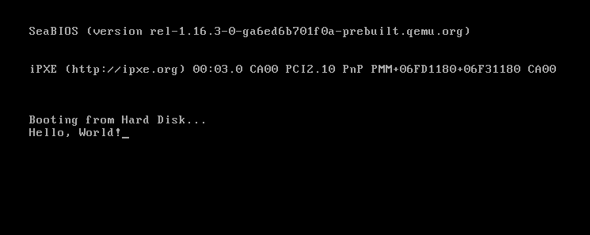
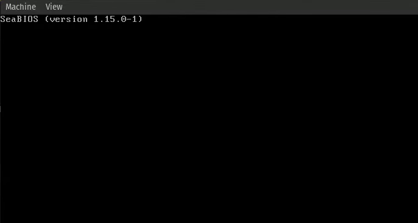
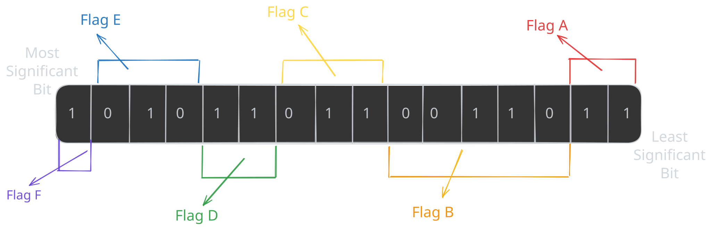
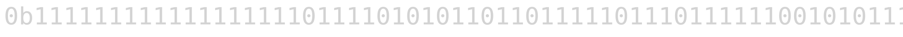
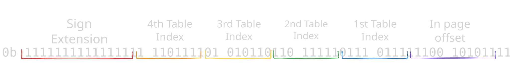
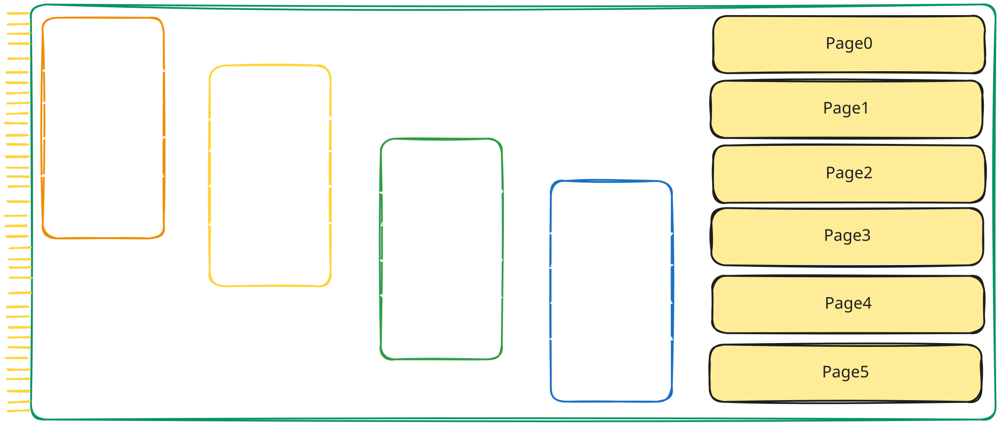

“If you can’t explain it simply, you don’t understand it well enough.” - Albert Einstein
Imagine you need to write some code to read from a file. You write a single, elegant line of Python
withopen(“my_file.txt”) asf:
, the file opens and the content appears as if by magic.
To the vast majority of the developers (more than 60%!) who rely on high level languages like Python and JavaScript1, writing code looks like this. We are all surrounded by abstractions, and have forgotten to learn the underlying implementation.
We trust our operating system to handle the context switching, the virtual memory mapping, and the I/O operations, often treating the kernel as an infallible, black box rather than a piece of software we can actually understand.
I followed the common path, starting with Python before moving to C to get a better understanding of how memory and hardware work.
I expected C to reveal the inner workings of the system, but I quickly found that calling
open(“my_file.txt”, “r”);
in C is functionally very similar to calling it in Python, both are simply wrappers for an existing system call.
Instead of interacting with the hardware, I was still just asking an existing kernel to do the work for me.
When I did try to move past these abstractions to write more “bare metal” code, I met the standard frustrations of low level development, which include segmentation faults, data corruptions, and thread safety violations that are notoriously difficult to debug.
But what if we didn’t have to choose between the safety of a high level language and the power that a lower level language gives us?
Where the compiler doesn’t just catch our syntax errors, but guarantees that code that should not work, will not even compile.
This includes data races or null pointer dereferences before we even hit “run”.
This is the shift offered by Rust, and this is why it is the language of choice in our operating system.
Today, the “inner workings” of the operating system have become a blind spot. This lack of low level knowledge leads directly to critical security vulnerabilities.
Furthermore, many developers are trapped using languages like C and C++ that, while powerful, are fundamentally flawed in their design, requiring humans to manually manage memory with a level of perfection that is statistically impossible to achieve.
This problem has reached a breaking point in the “AI copy paste” or “Vibe coding” culture.
Developers increasingly rely on Large Language Models to generate code that they do not fully read or understand.
Even in high level languages, this results in “bloatware”2, poor performance, and legacy systems that are impossible to debug because no one on the team knows how the underlying resources are actually being managed.
My proposed solution is to return to the core of computing and untangle the black box.
By building an operating system from scratch in Rust, we will learn to bridge the gap between high level logic and bare metal reality.
The solution isn’t just to “learn a new language”, but to adopt a new philosophy.
Through this book, we will gain two primary benefits:
Operating system understanding: We will move past the wrappers and system calls to implement our own memory allocators, paging structures, file systems, and more kernel logic.
Modern Safety Standards: We will learn how Rust’s ownership model and rich type system can eliminate entire classes of bugs that are common in C / C++ codebases.
We no longer have the luxury of ignoring the “small stuff”. As the industry moves toward more complex distributed systems and edge computing, the “black box” that was once small has grown so large that we can’t ignore it.
Organizations such as the U.S. Cybersecurity and Infrastructure Security Agency (CISA)3 and the White House4 issued a formal report specifically urging developers to transition to “memory safe languages” like Rust to eliminate security vulnerabilities that stem from memory unsafety.
Throughout this book, we will explore a wide range of Operating System specific concepts and Rust patterns. Even if this sounds hard, I encourage you to dive in, even if you have no prior experience with low level programming! To help you navigate these complex topics, I will provide clear, approachable explanations with highly visual elements such as animations, diagrams and colorful code blocks.
For topics that fall outside the immediate scope of this project, I will provide links to the learning materials to bridge the gap. That said, as developers, I also expect you to leverage your googling ability when you encounter a challenge :)
There are two types of chapters:
Chapters that will contain OS topics will be tagged with the OS tag.
Chapters that will contain Rust topics will be tagged with the RUST tag.
As a last note, I hope you will invest your precious time in reading this book, because I assure you it would make you a better, well rounded developer.
This document specifies the planned topics and features that will be developed in the LearnixOS and covered by this book.
Each topic has a corresponding issue both in the book and in the OS repository. The status of each topic can be tracked using the links provided in the tables below.
Note: This list is definitely not final, and more topics will be added as the development continues.
Taking the time to read through this project means the world to me. I hope you learned something valuable!
I work on this project in most of my free time!
While it’s a rewarding project, it takes a lot of work to implement all this stuff. For example, the high quality syntax highlighting which is done by a custom self written mdbook preprocessor, or the diagrams that are hand drawn using excalidraw
If you enjoyed what you found, there are four main ways you can help:
Spread the word: A kind comment or a quick share goes a long way in helping this project grow.
Star: Giving a star on GitHub helps the popularity of this project, and it also show me you appreciated it!
Feedback: I want to understand my target audience, so I can improve the content in the right direction. Please fill out this form to help me out!
Donations: If you’re feeling extra generous, you can support me on github. Every dollar helps!
“Machines take me by surprise with great frequency.” - Alan Turing
The first step in making our operating system is making a program that can be compiled, and executed, without any dependency.
This is not a straightforward task, because every program that we use in our daily life uses at least one, very important dependency: The Standard Library.
Sometimes, this library is provided by the operating system itself, for example, libc for the Linux kernel, or the WinAPI for the Windows operating system, and most of the time it is wrapped around by our programming languages.
Its name may vary per language, but here are some popular names:
Rust/C++ => std::*
C => stdlib.h, libc.so
Python => os, sys, math
Java => java.*, javax.*
Go => fmt, os
This library is linked1 to our code by default, and provides us with the ability to access our operating system.
Most of the time, programming languages add additional functionality to their standard library. For example, the Rust Standard library, adds the println! macro for printing to screen, smart collections like a Vec, or a LinkedList, as well as Box for safe memory management, a lot of useful traits, very smart iterators and much, much more!
Unfortunately, we won’t have this luxury of a library and we will need to implement a big part of it ourselves!
But don’t worry, Rust has an ace up its sleeve; it provides us with the great Core library, which is a dependency free base for the standard library, and more over, it provides us with traits, and structures that can be linked into our own OS, for example, the Core library provide the Allocator trait, which defines a generic interface the Vec, and Box use. Then, once we write our memory allocator2, we could create a Vec from the core library, and we can tell it to use our own allocator!
If any of this doesn’t tell you much, that’s fine! All of this and more will be explained with much more details on later chapters.
Afterwards, you can create the project with the following command:
$ cargo init <project_name>
$ cd <project_name>
If you have done everything correct, your project should look like this:
<project_name>/
|-- Cargo.toml
|-- src
|- main.rs
And the main file, should look something like this:
fnmain(){println!("Hello, world!");}
This can easily be run on your computer with cargo run but, because you are running it on a regular computer, with a functioning operating system, your program uses the standard library.
Note: In all parts of this project we are using the nightly distribution of Rust. This is because some features that we are going to use in the future are not yet stable, and are only available in nightly.
There are two ways to include it, the first one, is to add +nightly on every cargo command, for example:
$ cargo +nightly build
The second option, is to create a file which will hold our default toolchain
As mentioned before, we don’t want to depend on the standard library because it is meant for an already existing operating system. To ignore it, simply add #![no_std] on the top of our main file, this attribute tells the compiler that we don’t want to use the standard library.
Now, if we then try to compile our crate, we get this error message:
error: cannot find macro `println` in this scope
--> src/main.rs:4:5
|
4 | println!("Hello, world!");
| ^^^^^^^
error: `#[panic_handler]` function required, but not found
error: unwinding panics are not supported without std
|
= help: using nightly cargo,
use -Zbuild-std with panic="abort" to avoid unwinding
= note: since the core library is usually precompiled with panic="unwind",
rebuilding your crate with panic="abort"
may not be enough to fix the problem
When breaking this error down we see there are 3 main errors:
Cannot find macro println
#[panic handler] function is required
Unwinding panics are not supported without std.
The first error is more obvious. Because we don’t have our standard library, println does not exist, so we simply need to remove the line that uses it, the other errors will require their own sections to explain.
Exception handling is a big subject on computer science, but in general, we have two types of errors.
Recoverable Errors => Errors that the program know to handle, and have an alternative operation in case of a failure.
Unrecoverable Errors => Errors that the program doesn’t know how to handle. In that case, most program crash3
Rust doesn’t offer a standard exception for unrecoverable errors like other languages, for example, in Python an exception could be raised like this:
def failing_function(x: str):
if not isinstance(x, str):
raise TypeError("The type of x is not string!")
Instead, Rust provides us with the panic! macro, which will call the Panic Handler. This function is very important and it will be called every time the panic! macro is invoked, for example:
fnmain(){panic!("This is a custom message");}
Normally, the Standard Library provides us with an implementation of the Panic Handler, which will typically print the line number and file in which the error occurred. However, because we are now not using the Standard Library, we need to define the implementation of the function ourselves.
This function can be any function, as long as it includes the attribute #[panic_handler]. This attribute is added so the compiler will know which function to use when invoking the panic! macro, to enforce that only one function of this type exists, and to enforce the correct input argument signature and return type.
If we create an empty function for the panic handler, we will get this error:
error[E0308]: `#[panic_handler]` function has wrong type
--> src\main.rs:10:1
|
10 | fn panic_handler() {}
| ^^^^^^^^^^^^^^^^^^ incorrect number of function parameters
|
= note: expected signature `for<'a, 'b> fn(&'a PanicInfo<'b>) -> !`
found signature `fn() -> ()
This means that it wants our function to receive a reference to a structure called PanicInfo and return the ! type.
But what is this struct? and what is this weird type?
The PanicInfo struct includes basic information about our panic such as the location, and message. Its definition can be found in the Core library:
/// A struct providing information about a panic.////// A `PanicInfo` structure is passed to the panic handler defined by `#[panic_handler]`.////// For the type used by the panic hook mechanism in `std`, see [`std::panic::PanicHookInfo`].////// [`std::panic::PanicHookInfo`]: ../../std/panic/struct.PanicHookInfo.html#[lang="panic_info"]#[stable(feature="panic_hooks",since="1.10.0")]#[derive(Debug)]pubstructPanicInfo<'a>{message:&'afmt::Arguments<'a>,location:&'aLocation<'a>,can_unwind:bool,force_no_backtrace:bool,}
The ! type is a very special type in Rust, called the never type, as the type name may suggest, it says that a function should never return, which means our program will not continue after the function is called.
In a normal operating system, this is not a problem; just print the panic message + the location, and kill the process so it will not return. But in our own OS, unfortunately, this is not possible because there is not a process that we can exit. So, how can we prove to Rust we are not returning? By endlessly looping!
So at the end, this is the minimal definition of our handler, which results in the following code
This works, because it tells rust-analyzer to use a target that doesn’t include the standard library, and not to check other targets except the one we specified.
Note: You might have to install the target with rustup target add x86_64-unknown-none
When a program panics, usually because of an unrecoverable error, it has to stop whatever it is doing. In a normal execution environment with neighboring programs, all of the program’s memory should be cleaned up so a memory leak doesn’t occur on the operating system4. This is where unwinding comes in.
When a Rust program panics, and the panic strategy is to unwind, Rust goes up the stack of the program, and cleans up the data from each function that it encounters. However, walking back and cleaning up is a lot of work. Rust, therefore, allows you to choose the alternative of immediately aborting, which ends the program without cleaning up. This alternative is also useful in our case, where we don’t have the sense of “cleaning up”, because we still don’t have an operating system.
So, to simply switch the panic strategy to abort, we can add the following line to our Cargo.toml file:
After we disabled unwinding, we can now, hopefully, try to compile our code!
But, by running cargo run we get the following error:
error: using `fn main` requires the standard library
|
= help: use `#![no_main]` to bypass the Rust generated entrypoint
and declare a platform specific entrypoint yourself,
usually with `#[no_mangle]`
As per usual, the Rust compiler errors are pretty clear, and they tell us exactly what we need to do to fix the problem. In this case, we need to add the #![no_main] attribute to our crate, and declare a platform-specific entrypoint ourselves.
To define an entry point, we need to understand the linker.
The linker is a program that is responsible for structuring our code into segments, setting the entry point, defining the output format, and also linking other code to our program. This configuration is controlled by a linker script. For example, a very simple linker script may look like this:
OUTPUT_FORMAT(binary)
ENTRY(main)
This will set our entry point to main, and our output into a raw binary, which means the binary header5 of the program will not be included.
Then, to make our linker to use this script, we mainly have two options; one is to add some arguments to our build command, and the other one is to create a build script. In this book, we use the following build script:
usestd::path::Path;fnmain(){// Environment variable that stores the current working directoryletlocal_path: &Path=Path::new(env!("CARGO_MANIFEST_DIR"));// This tells cargo to add the `-C link-arg=--script=./linker.ld`// argument. Which will result in linking with our code with our// linker scriptprintln!("cargo:rustc-link-arg-bins=--script={}",local_path.join("linker.ld").display())}
But, after we do all this and again, run cargo build, we get the same error. At first, this doesn’t seem logical, because we defined a main function. But, although it is true that we defined one, we didn’t consider Rust’s default mangling.
This is a very clever idea done by Rust, and without it, things like the following wouldn’t be possible:
Although the functions are defined on different structs, they have the same name. But, because of mangling, the actual name of the function would be something like
A similar thing is happening to our main function, which makes its name not exactly ‘main’, making the entry point not recognized.
To fix it, we can add the #[unsafe(no_mangle)] attribute to our main function, which will make its name just ‘main’.
On some platforms, like MacOS, the default target is not compatible with #![no_std] binaries, so we need to change it to a more compatible one, like x86_64-unknown-none. This target ensures that the binary will be compiled for a 64 bit architecture, without any operating system.
Note: Build targets will be discussed in more detail in the next chapter.
You might have to install the target with rustup target add x86_64-unknown-none
If you followed through, the code should now compile with the following command:
cargo build --target x86_64-unknown-none
Although the code compiled, it still doesn’t make it bootable, which is what I will cover in the next section.
Linking is the process of combining compiled software builds so they can share functions. ↩
A subsystem in our operating system that is responsible for managing memory. ↩
Most programs don’t immediately crash, and have a crashing strategy to exit in a cleaner way. ↩
Some operating systems may not free up memory when terminating a program, and may assume it is the program responsibility to free up all memory before exiting. ↩
Operating systems have their own binary header so they can understand how to treat a binary. Some common ones are ELF and PE↩
“There is no elevator to success - you have to take the stairs.” - Zig Ziglar
In the previous section, we created a standalone binary, which is not linked to any standard library. But if you looked closely, and inspected the binary, you would see that we used a build target that is called x86_64-unknown-none, which is a generic target that doesn’t specify any operating system or vendor, but it still specifies the architecture as x86_64, which is the architecture of most modern computers.
The compiler of Rust, rustc is a cross-compiler, which means it can compile the same source code into multiple architectures and operating systems.
This provides us with a lot of flexibility, but it is the core reason for our problem. This is because you are probably compiling this code from a computer with a regular operating system (Linux, Windows or MacOS) which rustc supports, which means that its default target is your computer OS + your CPU architecture.
To see your default target, you can run rustc -vV and look at the host section.
The target contains information for the rustc compiler about which header should the binary have, what is the pointer and int size, what instruction set to use, and more information about the features of the CPU that it could utilize.
So, because we compiled our code just with cargo build, cargo, which under the hood uses rustc, compiled our code to our default target, which resulted in a binary that is operating system specific and not a truly standalone even though we used #![no_std].
Note: If you want to see the information of your computer target, use the following command
To boot our binary, we need to create a custom target that will specify that no vendor or operating system in our target triple is used, and that it will contain the right architecture. But, what architecture do we need?
In this guide, the operating system that we build will be compatible with the x86_64 computer architecture (and maybe other architectures in the far far future). So, for that we will need to understand what an x86_64 chip expects at boot time.
When our computer (or virtual machine) powers on, the first software that the CPU encounters is the BIOS, which is a piece of software that is responsible to perform hardware initialization during the computer start up. It comes pre installed on the motherboard and as an OS developer, we can’t interfere or modify the BIOS in any way.
The last thing BIOS does before handing to us the control over the computer, is to load one sector (512 bytes)1 from the boot device (can be hard-disk, cd-rom, floppy-disk etc) to memory address 0x7c00 if the sector is considered valid, which means that it has the BIOS Boot Signature at the end of it, which is the byte sequence 0x55 followed by 0xAA in offset bytes 510 and 511 respectively.
At this time for backward compatibility reasons, the computer starts at a reduced instruction set, at a 16bit mode called real mode which provides direct access to the BIOS interface. This mode lacks support for memory protection, multitasking, or code privileges, and has roughly 1 MiB of address space. Because of these limitation we want to escape it as soon as possible, but that is a problem that we will solve later (Maybe add link to when this is done).
With this information, we understand that we will need to build a target that will support 16bit real mode.
Unfortunately, if we look at all of the available targets, we would see that there is no target that support this unique need, but, luckily, Rust allows us to create custom targets!
As a clue, we can try and peek at the builtin targets, and check if there is something similar that we can borrow. For example, my target, which is the x86_64-unknown-linux-gnu looks like this:
This target has some useful info that we can use, like useful keys, such as arch, linker-flavor, cpu and more, that we will use in our target, and even the data-layout that we will copy almost entirely. Our final, 16bit target, will look like this:
{
// The general architecture to compile to, x86 cpu architecture in our case
"arch": "x86",
// Specific cpu target - Intel i386 CPU Which is the original 32-bit cpu
// Which is compatible for 16-bit real mode instructions
"cpu": "i386",
// Describes how data is laid out in memory for the LLVM backend, split by '-':
// e -> Little endianness (E for big endianness)
// m:e -> ELF style name mangling
// p:32:32 -> The default pointer is 32-bit with 32-bit address space
// p270:32:32 -> Special pointer type ID-270 with 32-bit size and alignment
// p271:32:32 -> Special pointer type ID-271 with 32-bit size and alignment
// p272:64:64 -> Special pointer type ID-272 with 64-bit size and alignment
// i128:128 -> 128-bit integers are 128-bit aligned
// f64:32:64 -> 64-bit floats are 32-bit or 64-bit aligned
// n:8:16:32 -> Native integers are 8-bit, 16-bit, 32-bit
// S128 -> Stack is 128-bit aligned
"data-layout": "e-m:e-p:32:32-p270:32:32-p271:32:32-p272:64:64-i128:128-f64:32:64-f80:32-n8:16:32-S128",
// No dynamic linking is supported, because there is no OS runtime loader.
"dynamic-linking": false,
// This target is allowed to produce executable binaries.
"executables": true,
// Use LLD's GNU compatible frontend (`ld.lld`) for linking.
"linker-flavor": "ld.lld",
// Use the Rust provided LLD linker binary (bundled with rustup)
// This makes that our binary can compiled on every machine that has rust.
"linker": "rust-lld",
// LLVM target triple, code16 indicates for 16bit code generation
"llvm-target": "i386-unknown-none-code16",
// The widest atomic operation is 64-bit (TODO! Check if this can be removed)
"max-atomic-width": 64,
// Disable position independent executables
// The position of this executable matters because it is loaded at address 0x7c00
"position-independent-executables": false,
// Disable the redzone optimization, which saves in advance memory
// on a functions stack without moving the stack pointer which saves some instructions
// because the prologue and epilogue of the function are removed
// this is a convention, which means that the guest OS
// won't overwrite this otherwise 'volatile' memory
"disable-redzone": true,
// The default int is 32-bit
"target-c-int-width": 32,
// The default pointer is 32-bit
"target-pointer-width": 32,
// The endianness, little or big
"target-endian": "little",
// panic strategy, also set on cargo.toml
// this aborts execution instead of unwinding
"panic-strategy": "abort",
// There is no target OS
"os": "none",
// There is not target vendor
"vendor": "unknown",
// Use static relocation (no dynamic symbol tables or relocation at runtime)
// Also means that the code is statically linked.
"relocation-model": "static"
}
Now, the only thing left to do before we can run our code, is to include the boot signature at our binary. This can be done in the linker script by adding the following lines:
SECTIONS {
/*
Make the start offset of the file 0x7c00 This is useful,
because if make jump to a function that it's offset in the binary is 0x100,
it will actually be loaded at address 0x7d00 by the BIOS, and not 0x100,
so we need to consider this offset, and that's how we do it.
*/
. = 0x7c00;
/*
Currently, we have nothing on the binary,
if we write the signature now, it will be at the start of the binary.
Because we want the signature to start at the offset of 510 in our binary,
we pad it with zeros.
*/
.fill : {
FILL(0)
. = 0x7c00 + 510;
}
/* Write the boot signature to make the sector bootable */
.magic_number : { SHORT(0xaa55) }
}
To compile our code, we just need to run the following command:
To see that indeed, the boot signature is in the correct place, we can use the Format-Hex command in windows or the hexdump command in Linux or MacOS to see the hex of our file.
This should result in a lot of zeros, and at the end, this line, where we can see the boot signature in the right offset
000001F0 00 00 00 00 00 00 00 00 00 00 00 00 00 00 55 AA
Because our code is experimental, we will not want to run it on our machine, because it can cause PERMANENT DAMAGE to it. This is because we don’t monitor cpu temperature, and other hardware sensors that can help us protect our pc. Instead, we will run our code in QEMU, which is a free and open-source full machine emulator and virtualizer. To download QEMU for your platform, follow the instructions here
To make a sanity check that QEMU indeed works on your machine with our wanted architecture after you downloaded it, run qemu-system-x86_64 on a terminal. This should open a window and in it write some messages that it tries to boot from certain devices, and after it, it fails, it should also write at the end it cannot find any bootable device. If that’s what you are seeing, everything is working correctly.
To provide our code, we need to add the -drive format=raw,file=<path-to-bin-file> flag to qemu, which will add to our virtual machine a disk drive with our code.
At a first glance, we might think our code still doesn’t work, because all we see is a black screen, but, if you notice closely, we no longer get more messages of the BIOS trying other boot devices, and we don’t get the "No bootable device." message.
So why we see black screen? This is because we didn’t provide the computer with any code to run and our main function is empty, but now we have a platform on which we can run any code we like!
To print “Hello, World!”, we can utilize the BIOS video interrupt which can help us print ASCII characters to the screen.
For now, don’t worry about the code implementation and just use and play with it. This code piece, and a lot more will be explained in the next chapter.
usecore::arch::asm;#[unsafe(no_mangle)]fnmain(){letmsg: &[u8; 13]=b"Hello, World!";for&ch: u8inmsg{unsafe{asm!("mov ah, 0x0E",// INT 10h function to print a char"mov al, {0}",// The input ASCII char"int 0x10",// Call the BIOS Interrupt Function// --- settings ---in(reg_byte)ch,// {0} Will become the register with the charout("ax")_,// Lock the 'ax' as output reg, so it won't be used elsewhere);}}unsafe{asm!("hlt");// Halt the system}}fn main
When we try to compile and run our code, we can see that it’s indeed booting, but we don’t see any message.
If you believe me that the code above is correct, and indeed works, we can try and look at the binary file that the compiler emitted with the hexdump command in Linux or MacOS, or Format-Hex in Windows.
When we do that, we can notice that it seems that code was added, but at the end of the file, and not at the start of it, and more over, it is located after the first sector which means it doesn’t even loaded by the BIOS. To resolve this, we need to learn about the default segment rustc generates.
.rodata - Includes the read-only data of our program
staticVAR:u32=42;
.eh_frame & .eh_frame_hdr - Includes information that is relevant to exception handling and stack unwinding. These section are not relevant for us because we use panic = "abort".
So, to make our linker put the segments in the right position, we need to change the SECTION segment of our linker script to this.
SECTIONS {
. = 0x7c00;
/*
Rust also mangles segment names.
The "<segment_name>.*" syntax is used to also include all the mangles
*/
.text : { *(.text .text.*) }
.bss : { *(.bss .bss.*) }
.rodata : { *(.rodata .rodata.*) }
.data : { *(.data .data.*) }
/*
This segment is not relevant for us, because we use `panic = "abort"`,
but to be sure that nothing unexpected happens, we discard it.
*/
/DISCARD/ : {
*(.eh_frame .eh_frame.*)
*(.eh_frame_hdr .eh_frame_hdr.*)
}
. = 0x7c00 + 510;
.magic_number : { SHORT(0xaa55) }
}
Now, when we compile and run our code, we can see our message!

This sector is not just any sector and it is called the ‘Master Boot Record’ which also contains our partition table. Although important, in this version of our operating and bootloader, we will ignore this partition table. ↩
“If debugging is the process of removing bugs, then programming must be the process of putting them in.” - Edsger W. Dijkstra
Debugging is a crucial part of a good operating system, and especially at the start of its development. We still don’t have good debugging methods like printing, so we need to use other methods.
By far the most annoying bug is the triple fault, which will be explained extensively in the Interrupts Chapter. In short, this is an error that is not recoverable, and the CPU will reset itself, and it looks like this:

Although this state is not recoverable, there are some methods to debug it even without having the ability to print.
One of the most useful methods to debug our code is to use a disassembler. A disassembler is a tool that takes binary code and converts it back into assembly language, which can help us understand what the CPU is executing at any given time.
By analyzing the assembly code, we can gain insights into the control flow and data manipulation happening within our operating system. This can be especially helpful when trying to identify the root cause of a bug or unexpected behavior.
Another useful debugging technique is to extract memory dumps. A memory dump is a snapshot of the contents of the system’s memory at a specific point in time. By examining the memory dump, we can see the state of various variables, data structures, and the stack at the moment of failure.
This provides valuable information about CPU structures that we are loading into the CPU, which might cause the triple fault if we don’t initialize them correctly.
A memory dump can be obtained with the following commands.
First, run the qemu virtual machine with the --monitor stdio option to enable the QEMU monitor interface in the terminal.
Then, in this terminal, run the following command:
(qemu) pmemsave <start_address> <size> <file name>
# For example
(qemu) pmemsave 0x1000 0x500 memory.dump
# This will create a dump of size 0x500 from 0x1000 - 0x1500.
Once we write our kernel, the first thing that we will do is writing a print method with formatting, because it is one of the best ways to debug our code.
In the bootloader, at a time when we haven’t written our print yet, we will mostly debug with the methods above, but for debugging purposes, we can print characters and even small strings using the BIOS like we did in our “Hello, World!” program.
“From a small spark may burst a mighty flame.” - Dante Alighieri
Writing a bootloader is not an easy task, and it can include a lot of things.
In this chapter we will write the minimal needed bootloader to load our kernel, and obtain information that is necessary for it.
In this chapter we will implement the following features:
Setup registers and stack
Enable the A20 line
Read kernel from disk
Load the global descriptor table
Enable Paging
These features are enough, at least for the start of our kernel. Later in the book, we will implement more features like obtaining a memory map, enabling text mode, locating the kernel in the file system, and more!
“Compatibility means deliberately repeating other people’s mistakes.” - David Wheeler
When writing our bootloader, and especially in the first stages, we encounter a lot of legacy that needs to be handled.
This legacy may come in multiple shapes, like bios interrupts, magic numbers and things that need to be initialized. Most of this work will be covered in this chapter.
Note: From now on, each of the code blocks will be structured as they are in the real project,
and every time a code file will have a path in it, that will be the same path in the real project.
For example, our first stage will be located in the bootloader/first_stage directory.
Our project structure will include the following directories:
kernel -> For the kernel code, and booting stages.
shared -> Shared crates that are relevant for multiple cases.
build -> Build utilities, like targets, linker scripts and more.
The Cargo.toml in the root of the project will include a workspace definition which will include all of the crates from our project.
At the start of our code, we want to zero out all of the memory segments in our machine, so all of the addresses that we will access will not be manipulated by the segments.
This manipulation can happen if the segments are not zeroed out, because certain instructions of the CPU will assume segments.
For example, the instruction mov, eax [0x1000] will assume address 0x1000 is prefixed by the ds register.
In 16bit real mode, the translation is as follows:
Physical address = (Segment * 0x10) + Specified Address
// For example, if we want to fetch data,
// and the data segment is 0x1000 and we want data at address 0x2000.
Final = 0x1000 * 0x10 + 0x2000
Which will result in the address 0x12000 instead of 0x2000
This technique results in a 20bit maximum address space instead of 16bit, which is 1MiB.
So, to zero down all the segments we will use the following code:
//; This will define a boot section for this asm code,
//; which we can put at the start of our binary.
.section .boot, "awx"
.global start
.code16
start:
//; Disable interrupts
cli
//; zero segment registers
xor ax, ax
mov ds, ax
mov es, ax
mov ss, ax
mov fs, ax
mov gs, ax
Then, we want to initialize the stack and the direction flag.
It is important to state the stack at a position that will not overwrite our code; if local variables are written to the same place as our code, it might cause a push instruction to overwrite an instruction that we need. because of this, we initialize the stack at 0x7c00 (31 KiB) which will ensure it will not happen, because the stack only grows down.
//; clear the direction flag (e.g. go forward in memory when using
//; instructions like lodsb)
cld
//; initialize stack
mov sp, 0x7c00
The next step in our initialization is enabling the A20 line, which is a legacy pain that we need to handle.
This is the 21st address line in our bus which is disabled by default due to compatibility reasons.
Right now it is not a problem because we can only access 1MiB of address space; however, later in our operating system we will want to be able to access all of the memory space we have, so we will need to enable this address line.
There are a lot of ways to enable the A20 line; the code we will use is a fast A20 that is implemented mostly on new chipsets, this method is DANGEROUS and on some chipsets it may do something else, or even DAMAGE the computer, and because of that, at least for now, we run this operating system ONLY on a virtual machine because we are not handling all of the cases.
Luckily, this method works on our QEMU virtual machine
// ANCHOR: segment
//; This will define a boot section for this asm code,
//; which we can put at the start of our binary.
.section .boot, "awx"
.global start
.code16
start:
//; Disable interrupts
cli
//; zero segment registers
xor ax, ax
mov ds, ax
mov es, ax
mov ss, ax
mov fs, ax
mov gs, ax
// ANCHOR_END: segment
// ANCHOR: stack
//; clear the direction flag (e.g. go forward in memory when using
//; instructions like lodsb)
cld
//; initialize stack
mov sp, 0x7c00
// ANCHOR_END: stack
// ANCHOR: A20
//; Enable the A20 line via I/O Port 0x92
//; This method might not work on all motherboards
//; Use with care on real hardware!
enable_a20:
//; Check if a20 is already enabled
in al, 0x92
test al, 2
//; If so, skip the enabling code
jnz enable_a20_after
//; Else, enable the a20 line
or al, 2
and al, 0xFE
out 0x92, al
enable_a20_after:
// ANCHOR_END: A20
// ANCHOR: INT13
check_int13h_extensions:
//; Set function constants `dl` already contains the driver
mov ah, 0x41
mov bx, 0x55aa
int 0x13
jnc .int13_pass
//; hlt system if there is no support
hlt
.int13_pass:
// ANCHOR_END: INT13
// ANCHOR: disk
//; push disk number into the stack will be at 0x7bfe
//; and call the first_stage function
push dx
call first_stage
// ANCHOR_END: disk
Enable the A20 line
Now, after enabling the A20 line, we want to load from the disk into memory the rest of the bootloader and of course, our kernel.
This is not a trivial task, especially when we have less than 512 bytes of code to do so. But don’t worry, because the BIOS will come to our help.
BIOS Interrupts, an interface that is provided by the BIOS, will allow us to perform numerous operations to our system with just a few assembly instructions.
For now, you don’t have to understand how interrupts work, and this topic will have a deeper explanation later.
What you do need to understand, is that each set of functions that the BIOS provides has a number.
These sets are divided by topics, and the specific function in each set that we want to use will also have a number that we will put in the a register.
For example, if we want to check our drive status, we will need interrupt number 0x13, which is the set of function that correspond for disk operations,
and we will need function that corresponds to the number 0x1. (This information can be found in this interrupt table)
Then, calling the function will look like this:
; Set up registers per specification
...
; Set `ah` with the function code
mov ah, 1
; Call the relevant interrupt
int 0x13
; For this function, `ah` will contain the result, nonzero value means an error
; So we can parse the value as follows
test ah, ah
jnz disk_has_a_problem
Note: Most functions have a specification on the internet for what to put in each register, and in which register the output will be.
the specification for the above function can be found here
To read our kernel from the disk, we can utilize two functions that are provided by the BIOS, the first one is int 0x13 ah=0x2 which is the read sector function; this is an older function that reads sectors from the disk into memory by taking the cylinder, head, and sector locations. The other function is the int 0x13 ah=0x42 which is the extended read function, this is a newer function that reads from disk using the disk packet structure.
Both of these functions will be explained, and at the end, we will use the newer one.
In today’s computers, there are multiple ways to store persistent information,
SSD and NVMe which are newer storage hardware that provides fast access speeds to data and lower latency compared to HDD which is an older technology that the BIOS works with.
To read from a HDD, we first need to understand its geometry.
Each disk contains multiple platters which are a magnetic disk that can store data, each platter can typically store information on both sides, so the number of heads is 2 * platters.
Each head of the disk is divided into inner circles which are called tracks, the set of aligned tracks on all of the heads is called a cylinder.
Finally the sector is the arc on the track that actually holds our data. Sectors are commonly 512 bytes in size, but larger sizes are possible.
With that information, we can understand that the disk uses a 3D coordinate system, and in order to specify which sector we want to read, we need to specify a cylinder number that the sector is in, then, provide the head number, in order to specify the track the sector is in, and then we provide the sector number in the track to get the actual sector that holds our data. This can be demonstrated with this picture:
Figure 2-0: Cylinder Head Sector Diagram
Note: To obtain how many cylinders, heads and sectors are on a disk we can use the BIOS int 0x13 ah=0x8 function or the int 0x13 ah=0x48 function.
With that said, it is not a surprise that the simple, read sector BIOS function needs exactly this information.
; Set data segment to 0
xor ax, ax
mov ds, ax
; Number of sectors to read in `al`
mov al, 63
; Cylinder number in `ch`
mov ch, 0
; Sector number in cl
; The first sector is already loaded to memory by the BIOS
; And the sector count starts at 1 and not 0
mov cl, 2
; Head number in 'dh' 0
mov dh, 0
; `dl` should already contain the drive number from BIOS if not overrode.
; The buffer to read to is es:bx.
; Since BIOS loads 512 bytes at the start, the next empty address is 0x7e00
; This address can be represented in multiple ways because of segmentation
; For example es=0x7e0, bx=0 or es=0, bx=0x7e00
xor bx, bx
mov es, bx
mov bx, 7e00h
; Put function code in `ah`
mov ah, 2
; Call the function
int 13h
Although the Cylinder-Head-Sector model is quite accurate and specific, it is harder to understand, and requires the knowledge of the disk geometry.
Moreover, it is not compliant with other, newer disk hardware like SSD or NVMe.
Because of that, a better addressing scheme was proposed which is called Logical Block Addressing or LBA for short.
This is a linear address scheme, where each address is a sector, or so called data block.
This, unlike the sector count scheme, is a zero-based address, which means the first block is at address 0, the second at address 1 and so on.
This address scheme is compatible with CHS addressing, and a CHS address can be translated to an LBA with the following formula:
$$ LBA = (C \times N_{Heads Per Cylinder} + H) \times K_{Sectors Per Track} + (S - 1) $$
This address can translate backwards, so an LBA address can become a CHS tuple with these formulas:
$$
Cylinder = \text{LBA} \div ({N_{Heads Per Cylinder}} \times K_{Sectors Per Track}) \
$$
$$
Head = (\text{LBA} \div K_{Sectors Per Track}) \bmod {N_{Heads Per Cylinder}} \
$$
$$
Sector = (\text{LBA} \bmod K_{Sectors Per Track}) + 1
$$
After learning about LBA, the only logical thing to think, is how to read data from the disk using LBA instead of CHS.
This is where the extended read functions comes in; it expects a structure called the disk address packet which looks like this:
/// The `repr(C)` means that the layout in memory will be as/// specified (like in C) because rust ABI doesn't state that/// this is promised.////// The `repr(packed) states that there will no padding due/// to alignment#[repr(C,packed)]pubstructDiskAddressPacket{/// The size of the packetpacket_size:u8,/// Zerozero:u8,/// How many sectors to readnum_of_sectors:u16,/// Which address in memory to save the datamemory_address:u16,/// Memory segment for the addresssegment:u16,/// The LBA address of the first sectorabs_block_num:u64,}
But, just before we use it, we need to check if this extension is available on our disk. This can be done with int 0x13 ah=0x41 which checks if all extended functions are available on our disk.
The check can be done with the following code:
check_int13h_extensions:
//; Set function constants `dl` already contains the driver
mov ah, 0x41
mov bx, 0x55aa
int 0x13
jnc .int13_pass
//; hlt system if there is no support
hlt
.int13_pass:
Because we are all using the same emulator, it should pass the hlt instruction and continue execution. Now to read from disk we can implement a read function to our disk packet.
This is quite straight forward, we will create a new function that will initialize our packet from basic inputs, create a load function that will call int 0x13 ah=0x42 for us with the packet to the right disk.
First, for organization, we will create some helpful enums:
#[repr(u8)]/// BIOS interrupts number for each interrupt type used in/// the kernel.pubenumBiosInterrupts{Video=0x10,Disk=0x13,Memory=0x15,}#[repr(u8)]/// Disk interrupt number for each function used in the/// kernel.pubenumDiskInterrupt{ExtendedRead=0x42,}
Then, we can create an initializer function for our disk packet:
implDiskAddressPacket{/// Create a new Disk Packet////// # Parameters////// - `num_of_sectors`: The number of sectors to load (Max 128)/// - `memory_address`: The starting memory address of the segment to/// load the sectors to/// - `segment`: The memory segment start address/// - `abs_block_num`: The starting sector Logical Block Address (LBA)// ANCHOR: newpubfnnew(num_of_sectors:u16,memory_address:u16,segment:u16,abs_block_num:u64,)->Self{Self{// The size of the packetpacket_size:size_of::<Self>()asu8,// zerozero:0,// Number of sectors to read, this can be a max of 128 sectors.// This is because the address increments every time we read a// sector. The largest number a register in this// mode can hold is 2^16 When divided by a sector// size, we get that we can read only 128 sectors.num_of_sectors:num_of_sectors.min(128),// The initial memory addressmemory_address,// The segment the memory address is insegment,// The starting LBA address to read fromabs_block_num,}}fn new}impl DiskAddressPacket
And then, finally the function that will call the interrupt with our packet, and will read the disk content into memory.
implDiskAddressPacket{/// Load the sectors specified in the disk packet to the/// given memory segment////// # Parameters////// - `disk_number`: The disk number to read the sectors from// ANCHOR: loadpubunsafefnload(&self,disk_number:u8){unsafe{// This is an inline assembly block// This block's assembly will be injected to the function.asm!(// si register is required for llvm it's content needs to be// saved"push si",// Set the packet address in `si` and format it for a 16bit// register"mov si, {0:x}",// Put function code in `ah`"mov ah, {1}",// Put disk number in `dl`"mov dl, {2}",// Call the `disk interrupt`"int {3}",// Restore si for llvm internal use."pop si",in(reg)selfas*constSelfasu16,constDiskInterrupt::ExtendedReadasu8,in(reg_byte)disk_number,constBiosInterrupts::Diskasu8,)}}unsafe fn load}impl DiskAddressPacket
We can create a disk packet in our entry function, and load it!
But, just before we can do that, we need to somehow get the disk number we are in, and call our function.
The disk number that we booted from as used in above examples is in the dl register, so we can push it to the stack.
Then, use the no_mangle attribute on our function and call it by it’s name.
Then, we can get the disk number from the stack, and load our packet.
//; push disk number into the stack will be at 0x7bfe
//; and call the first_stage function
push dx
call first_stage
And create a constant for the disk number memory address
Then, in the first stage function
pubconstDISK_NUMBER_OFFSET:u16=0x7BFE;unsafefnload_dap(){// Read the disk number the os was booted fromletdisk_number: u8=unsafe{core::ptr::read(src:DISK_NUMBER_OFFSETas*constu8)};// Create a disk packet which will load 4 sectors (512 bytes each)// from the disk to memory address 0x7e00// The address 0x7e00 was chosen because it is exactly one sector// after the initial address 0x7c00.#[rustfmt::skip]letdap: DiskAddressPacket=DiskAddressPacket::new(num_of_sectors:4,memory_address:0,segment:0x7e0,abs_block_num:1);unsafe{dap.load(disk_number)};}unsafe fn load_dap
Read kernel from disk
Although everything seems correct, and data from the disk should now be in memory, it will still not compile and boot properly.
But I will leave it as a challenge for you!
“With great power comes great responsibility.” - Voltaire / Spider-Man
As you may recall from previous chapters, our BIOS only loads the first sector to RAM, which leaves about just shy of 512 bytes1.
After we read from disk, it will enable us to write much more code, because we will not be limited to 512 bytes.
But just before we do that, we don’t want to limit ourselves to only 16bit instructions.
For that we need to enter protected mode which will allow us to unlock some CPU features such as 32bit instructions.
Entering protected mode requires us to initialize the Global Descriptor Table (GDT) which is a CPU structure that will be discussed in depth below, as well as toggling the protected mode bit in cr0.
All the information about the Global Descriptor Table is taken from both the Intel Manual Volume 3A section 3.4.5, and the great osdev website.
This is a structure that is specific to the x86 CPU family, and it contains information about the different segments.
In general, segments are used to divide memory into logical parts, and to translate addresses as we seen in real mode.
Address translation with the GDT will not be wildly used in this chapter, because it will not be used throughout the OS. Instead, memory paging will be used and explained in the next chapter.For now, think of a memory segment as a fixed size blob of contiguous physical memory.
In protected mode, the common way to organize memory is using these segments. Because segment registers2 hold only one number,
they can’t hold enough information for us. That is where the Global Descriptor Table comes in place.
The Global Descriptor Table is an array of structures that include information about a segment.
When we want to use our custom segment, we load its offset on the GDT to the segment register.
For example, we can create a segment for user data at index 1 of our table.
This segment will not hold important data for the system or code that can be executed.
If we want to load it into the ds we will set it to the offset of the structure in the table.
Each entry is 8 bytes long, index one will be at an offset of 8, which means we will set ds=8
Instead of just revealing the structure that is used for each segment, I want you to pause and ponder: what information should each segment include?
Remember that some instructions assume segments, like mov, jmp etc. and we want segments for the kernel, users, data and code.
When I asked myself this question, I came up with the following ideas:
What is the initial address of the segment. i.e the start address in memory where the segment starts.
What is the end address of the segment. i.e the end address in memory where the segment ends.
What the segment includes. i.e data segment, code segment etc.
What is the privilege level of the segment. i.e can anyone access it or only the kernel
For a data segment, Is the data read only, or may I modify it?
For a code segment, can I execute it or not yet.
If you guessed something similar to this, you are mostly correct!
Our entry will look like this:
Figure 2-1: global descriptor table entry structure
But what are these fields?
Base: This is a 32-bit value, which is split on the entire entry and represents the address of where the segment begins.
Limit: This is a 20-bit value, which is split on the entire entry and represents the size of the segment.
Access Byte: Flags that are relevant to the memory range of the segment,
like the access privileges of this segment.
Flags: General flags that are relevant for the entry fields.
All of these fields will become a struct and together they represent a single entry in our GDT.
Both the AccessByte, the LimitFlags, and more structures throughout the book, are using one bit flags, which represent some inner settings of the CPU.
Although setting a one bit flag is easy, and can be done with 1 << bit_number to set the nth bit, we would like abstractions such as set_<flag_name>, which are more readable and less prone to errors.
But, if we would do that to every flag, it will be A LOT of boilerplate code.
For this reason, Rust provides us with an amazing macro system.
If you read through some previous version of this book, you may have seen the explanation of the flag! proc-macro, which was used like this:
implAccessByte {
flag!(readable, 1);
}
This macro was used to define those exactly 1 bit flags. But as it will turn out, this is not enough, and more functionality will be needed.
The problem with this macro is that it had to be called for each bit flag. Because it did not take multiple flags, the macro did not have enough context to generate a Debug trait implementation that shows bit flag names.
More problems that I was having, but not a direct outcome of the initial design, is that flags sometimes contain more than 1 bit, and may contain n bits, also, certain n bit flags may have a specific set of values that are valid, and we may want to name them in an enum.
As you can see, we have the macro attribute at the top of our struct, which is called bitfields.
Each field in this struct is a flag, and as you can see, the highlighter is smart and can expand our macro, so the color of the fields are the same as a function.
The type of each field represents the flag width in bits. B1 is one bit and B20 is 20 bits.
Some flags may have their own attribute such as r and w which create a read function and a write function, respectively. When they are not defined, both functions are created.
Flags may also contain types, which are mostly enums that contains the valid values, or even all the values but gives them a readable name.
While this macro seems complex, it will just create the functions that will help us to set flags in a convenient way.
To see what this macro generated, we can use the amazing cargo-expand tool created by David Tolnay
For example, the expansion of the call above.
#![feature(const_trait_impl)]usesuper::enums::{ProtectionLevel,SegmentDescriptorType};#[repr(transparent)]pubstructAccessByte(u8);#[automatically_derived]impl::core::marker::CopyforAccessByte{}#[automatically_derived]#[doc(hidden)]unsafeimpl::core::clone::TrivialCloneforAccessByte{}#[automatically_derived]impl::core::clone::CloneforAccessByte{#[inline]fnclone(&self)->AccessByte{let_:::core::clone::AssertParamIsClone<u8>;*self}}implAccessByte{#[inline]pubconstfnnew()->Self{Self(0)}#[inline]#[track_caller]fnis_accessed(&self)->bool{unsafe{letaddr: *mut u8=selfas*const_= AccessByteas*mutu8;letval: u8=::core::ptr::read_volatile(src:addr);letmask: u8=(u8::MAX>>(u8::BITS-1usizeasu32))<<0usize;letbits: u8=(val&mask)>>0usize;<boolas::core::convert::TryFrom<u8>>::try_from(bitsasu8)Result<bool, TryFromIntError>.expect("Cannot convert bit representation into bool")}}#[inline]#[track_caller]fnis_readable_writable(&self)->bool{unsafe{letaddr: *mut u8=selfas*const_= AccessByteas*mutu8;letval: u8=::core::ptr::read_volatile(src:addr);letmask: u8=(u8::MAX>>(u8::BITS-1usizeasu32))<<1usize;letbits: u8=(val&mask)>>1usize;<boolas::core::convert::TryFrom<u8>>::try_from(bitsasu8)Result<bool, TryFromIntError>.expect("Cannot convert bit representation into bool")}}#[inline]#[track_caller]fnset_readable_writable(&mutself,v:bool){letv: u8=<u8as::core::convert::TryFrom<_= bool>>::try_from(v)Result<u8, Infallible>.ok()Option<u8>.expect("Can't convert value 'v' (bool) into u8");iftrue{if!((vasu8)<=(1u128asu8)){{::core::panicking::panic_fmt(format_args!("AccessByte::set_readable_writable: value out of \
range: must fit in 1 bits (max 0x1)",));}}}unsafe{letaddr: *mut u8=selfas*const_= AccessByteas*mutu8;letval: u8=::core::ptr::read_volatile(src:addr);letmask: u8=(u8::MAX>>(u8::BITS-1usizeasu32))<<1usize;letcleared: u8=val&!mask;letnew: u8=cleared|((vasu8)<<1usize);::core::ptr::write_volatile(dst:addr,src:new);}}fn set_readable_writable#[inline]#[track_caller]constfnreadable_writable(mutself,v:bool)->Self{letv: u8=<u8as::core::convert::TryFrom<_= bool>>::try_from(v)Result<u8, Infallible>.ok()Option<u8>.expect("Can't convert value 'v' (bool) into u8");iftrue{if!((vasu8)<=(1u128asu8)){{::core::panicking::panic_fmt(format_args!("AccessByte::readable_writable: value out of \
range: must fit in 1 bits (max 0x1)",));}}}self.0|=(vasu8)<<1usize;self}const fn readable_writable#[inline]#[track_caller]fnis_direction_conforming(&self)->bool{unsafe{letaddr: *mut u8=selfas*const_= AccessByteas*mutu8;letval: u8=::core::ptr::read_volatile(src:addr);letmask: u8=(u8::MAX>>(u8::BITS-1usizeasu32))<<2usize;letbits: u8=(val&mask)>>2usize;<boolas::core::convert::TryFrom<u8>>::try_from(bitsasu8)Result<bool, TryFromIntError>.expect("Cannot convert bit representation into bool")}}#[inline]#[track_caller]fnset_direction_conforming(&mutself,v:bool){letv: u8=<u8as::core::convert::TryFrom<_= bool>>::try_from(v)Result<u8, Infallible>.ok()Option<u8>.expect("Can't convert value 'v' (bool) into u8");iftrue{if!((vasu8)<=(1u128asu8)){{::core::panicking::panic_fmt(format_args!("AccessByte::set_direction_conforming: value out \
of range: must fit in 1 bits (max 0x1)",));}}}unsafe{letaddr: *mut u8=selfas*const_= AccessByteas*mutu8;letval: u8=::core::ptr::read_volatile(src:addr);letmask: u8=(u8::MAX>>(u8::BITS-1usizeasu32))<<2usize;letcleared: u8=val&!mask;letnew: u8=cleared|((vasu8)<<2usize);::core::ptr::write_volatile(dst:addr,src:new);}}fn set_direction_conforming#[inline]#[track_caller]constfndirection_conforming(mutself,v:bool)->Self{letv: u8=<u8as::core::convert::TryFrom<_= bool>>::try_from(v)Result<u8, Infallible>.ok()Option<u8>.expect("Can't convert value 'v' (bool) into u8");iftrue{if!((vasu8)<=(1u128asu8)){{::core::panicking::panic_fmt(format_args!("AccessByte::direction_conforming: value out of \
range: must fit in 1 bits (max 0x1)",));}}}self.0|=(vasu8)<<2usize;self}const fn direction_conforming#[inline]#[track_caller]fnis_executable(&self)->bool{unsafe{letaddr: *mut u8=selfas*const_= AccessByteas*mutu8;letval: u8=::core::ptr::read_volatile(src:addr);letmask: u8=(u8::MAX>>(u8::BITS-1usizeasu32))<<3usize;letbits: u8=(val&mask)>>3usize;<boolas::core::convert::TryFrom<u8>>::try_from(bitsasu8)Result<bool, TryFromIntError>.expect("Cannot convert bit representation into bool")}}#[inline]#[track_caller]fnset_executable(&mutself,v:bool){letv: u8=<u8as::core::convert::TryFrom<_= bool>>::try_from(v)Result<u8, Infallible>.ok()Option<u8>.expect("Can't convert value 'v' (bool) into u8");iftrue{if!((vasu8)<=(1u128asu8)){{::core::panicking::panic_fmt(format_args!("AccessByte::set_executable: value out of range: \
must fit in 1 bits (max 0x1)",));}}}unsafe{letaddr: *mut u8=selfas*const_= AccessByteas*mutu8;letval: u8=::core::ptr::read_volatile(src:addr);letmask: u8=(u8::MAX>>(u8::BITS-1usizeasu32))<<3usize;letcleared: u8=val&!mask;letnew: u8=cleared|((vasu8)<<3usize);::core::ptr::write_volatile(dst:addr,src:new);}}fn set_executable#[inline]#[track_caller]constfnexecutable(mutself,v:bool)->Self{letv: u8=<u8as::core::convert::TryFrom<_= bool>>::try_from(v)Result<u8, Infallible>.ok()Option<u8>.expect("Can't convert value 'v' (bool) into u8");iftrue{if!((vasu8)<=(1u128asu8)){{::core::panicking::panic_fmt(format_args!("AccessByte::executable: value out of range: \
must fit in 1 bits (max 0x1)",));}}}self.0|=(vasu8)<<3usize;self}const fn executable#[inline]#[track_caller]fnget_segment_type(&self)->SegmentDescriptorType{unsafe{letaddr: *mut u8=selfas*const_= AccessByteas*mutu8;letval: u8=::core::ptr::read_volatile(src:addr);letmask: u8=(u8::MAX>>(u8::BITS-1usizeasu32))<<4usize;letbits: u8=(val&mask)>>4usize;<SegmentDescriptorTypeas::core::convert::TryFrom<u8,>>::try_from(bitsasu8)Result<SegmentDescriptorType, ConversionError<u8>>.expect("Cannot convert bit representation into SegmentDescriptorType",)}}#[inline]#[track_caller]fnset_segment_type(&mutself,v:SegmentDescriptorType){letv: u8=<u8as::core::convert::TryFrom<_= SegmentDescriptorType>>::try_from(v)Result<u8, Infallible>.ok()Option<u8>.expect("Can't convert value 'v' (SegmentDescriptorType) into u8",);iftrue{if!((vasu8)<=(1u128asu8)){{::core::panicking::panic_fmt(format_args!("AccessByte::set_segment_type: value out of \
range: must fit in 1 bits (max 0x1)",));}}}unsafe{letaddr: *mut u8=selfas*const_= AccessByteas*mutu8;letval: u8=::core::ptr::read_volatile(src:addr);letmask: u8=(u8::MAX>>(u8::BITS-1usizeasu32))<<4usize;letcleared: u8=val&!mask;letnew: u8=cleared|((vasu8)<<4usize);::core::ptr::write_volatile(dst:addr,src:new);}}fn set_segment_type#[inline]#[track_caller]constfnsegment_type(mutself,v:SegmentDescriptorType)->Self{letv: u8=<u8as::core::convert::TryFrom<_= SegmentDescriptorType>>::try_from(v)Result<u8, Infallible>.ok()Option<u8>.expect("Can't convert value 'v' (SegmentDescriptorType) into u8",);iftrue{if!((vasu8)<=(1u128asu8)){{::core::panicking::panic_fmt(format_args!("AccessByte::segment_type: value out of range: \
must fit in 1 bits (max 0x1)",));}}}self.0|=(vasu8)<<4usize;self}const fn segment_type#[inline]#[track_caller]fnget_dpl(&self)->ProtectionLevel{unsafe{letaddr: *mut u8=selfas*const_= AccessByteas*mutu8;letval: u8=::core::ptr::read_volatile(src:addr);letmask: u8=(u8::MAX>>(u8::BITS-2usizeasu32))<<5usize;letbits: u8=(val&mask)>>5usize;<ProtectionLevelas::core::convert::TryFrom<u8>>::try_from(bitsasu8,)Result<ProtectionLevel, ConversionError<u8>>.expect("Cannot convert bit representation into ProtectionLevel",)}}#[inline]#[track_caller]fnset_dpl(&mutself,v:ProtectionLevel){letv: u8=<u8as::core::convert::TryFrom<_= ProtectionLevel>>::try_from(v)Result<u8, Infallible>.ok()Option<u8>.expect("Can't convert value 'v' (ProtectionLevel) into u8");iftrue{if!((vasu8)<=(3u128asu8)){{::core::panicking::panic_fmt(format_args!("AccessByte::set_dpl: value out of range: must \
fit in 2 bits (max 0x3)",));}}}unsafe{letaddr: *mut u8=selfas*const_= AccessByteas*mutu8;letval: u8=::core::ptr::read_volatile(src:addr);letmask: u8=(u8::MAX>>(u8::BITS-2usizeasu32))<<5usize;letcleared: u8=val&!mask;letnew: u8=cleared|((vasu8)<<5usize);::core::ptr::write_volatile(dst:addr,src:new);}}fn set_dpl#[inline]#[track_caller]constfndpl(mutself,v:ProtectionLevel)->Self{letv: u8=<u8as::core::convert::TryFrom<_= ProtectionLevel>>::try_from(v)Result<u8, Infallible>.ok()Option<u8>.expect("Can't convert value 'v' (ProtectionLevel) into u8");iftrue{if!((vasu8)<=(3u128asu8)){{::core::panicking::panic_fmt(format_args!("AccessByte::dpl: value out of range: must fit \
in 2 bits (max 0x3)",));}}}self.0|=(vasu8)<<5usize;self}const fn dpl#[inline]#[track_caller]fnis_present(&self)->bool{unsafe{letaddr: *mut u8=selfas*const_= AccessByteas*mutu8;letval: u8=::core::ptr::read_volatile(src:addr);letmask: u8=(u8::MAX>>(u8::BITS-1usizeasu32))<<7usize;letbits: u8=(val&mask)>>7usize;<boolas::core::convert::TryFrom<u8>>::try_from(bitsasu8)Result<bool, TryFromIntError>.expect("Cannot convert bit representation into bool")}}#[inline]#[track_caller]fnset_present(&mutself,v:bool){letv: u8=<u8as::core::convert::TryFrom<_= bool>>::try_from(v)Result<u8, Infallible>.ok()Option<u8>.expect("Can't convert value 'v' (bool) into u8");iftrue{if!((vasu8)<=(1u128asu8)){{::core::panicking::panic_fmt(format_args!("AccessByte::set_present: value out of range: \
must fit in 1 bits (max 0x1)",));}}}unsafe{letaddr: *mut u8=selfas*const_= AccessByteas*mutu8;letval: u8=::core::ptr::read_volatile(src:addr);letmask: u8=(u8::MAX>>(u8::BITS-1usizeasu32))<<7usize;letcleared: u8=val&!mask;letnew: u8=cleared|((vasu8)<<7usize);::core::ptr::write_volatile(dst:addr,src:new);}}fn set_present#[inline]#[track_caller]constfnpresent(mutself,v:bool)->Self{letv: u8=<u8as::core::convert::TryFrom<_= bool>>::try_from(v)Result<u8, Infallible>.ok()Option<u8>.expect("Can't convert value 'v' (bool) into u8");iftrue{if!((vasu8)<=(1u128asu8)){{::core::panicking::panic_fmt(format_args!("AccessByte::present: value out of range: must \
fit in 1 bits (max 0x1)",));}}}self.0|=(vasu8)<<7usize;self}const fn present}impl AccessByteimplconst::core::convert::From<u8>forAccessByte{fnfrom(value:u8)->Self{AccessByte(value)}}implconst::core::convert::From<AccessByte>foru8{fnfrom(value:AccessByte)->Self{value.0}}impl::core::fmt::DebugforAccessByte{fnfmt(&self,f:&mut::core::fmt::Formatter<'a:'_>,)->::core::fmt::Result{f.debug_struct(name:"AccessByte")DebugStruct<'_, '_>.field(name:"accessed",value:&self.is_accessed())&mut DebugStruct<'_, '_>.field(name:"readable_writable",value:&self.is_readable_writable())&mut DebugStruct<'_, '_>.field(name:"direction_conforming",value:&self.is_direction_conforming())&mut DebugStruct<'_, '_>.field(name:"executable",value:&self.is_executable())&mut DebugStruct<'_, '_>.field(name:"segment_type",value:&self.get_segment_type())&mut DebugStruct<'_, '_>.field(name:"dpl",value:&self.get_dpl())&mut DebugStruct<'_, '_>.field(name:"present",value:&self.is_present())&mut DebugStruct<'_, '_>.finish()}}impl Debug for AccessByte
If this macro seems really cool and complicated, that’s great! because it will be fully explained and implemented in later chapters.
We will also define an enum that will include the protection level and the system segment flags so that they have clear names.
Now, just before creating a new function for our entry, we don’t want to specify the base in three parts and the limit in two parts every time. Instead, we want the new function to do that for us.
#[repr(C,packed)]structGlobalDescriptorTableEntry32{limit_low:u16,base_low:u16,base_mid:u8,access_byte:AccessByte,limit_flags:LimitFlags,base_high:u8,}implGlobalDescriptorTableEntry32{/// Create a new entry////// # Parameters////// - `base`: The base address of the segment/// - `limit`: The size of the segment/// - `access_byte`: The type and access privileges of the entry/// - `flags`: Configuration flags of the entry// ANCHOR: gdt_entry32_newpubconstfnnew(base:u32,limit:u32,access_byte:AccessByte,flags:LimitFlags,)->GlobalDescriptorTableEntry32{// Split base into the appropriate partsletbase_low: u16=(base&0xffff)asu16;letbase_mid: u8=((base>>0x10)&0xff)asu8;letbase_high: u8=((base>>0x18)&0xff)asu8;// Split limit into the appropriate partsletlimit_low: u16=(limit&0xffff)asu16;letlimit_high: u8=((limit>>0x10)&0xf)asu8;// Combine the part of the limit size with the flagsletlimit_flags: u8=flags.0|limit_high;GlobalDescriptorTableEntry32{limit_low,base_low,base_mid,access_byte,limit_flags:LimitFlags(limit_flags),base_high,}}const fn new}impl GlobalDescriptorTableEntry32
Now, after understanding the Global Descriptor Table, we want to jump to the next stage.
This will require us to create and load a temporary Global Descriptor Table.
Each table must have at least three entries: an initial null entry that is filled with zeros, which is always required as the first entry; a data entry for the data segment, so we can read and write to memory; and a code entry, so we can execute code.
If you noticed, all of the functions that we defined so far are marked with const. this is useful because we can create our Global Descriptor Table as a static variable, which will be in the binary.
This is useful because it will initialize our Global Descriptor Table during compile time.
So, the only thing left to do is to load the Global Descriptor Table. This can be done with the lgdt instruction which loads the Global Descriptor Table Register with our table. This is a hidden register that includes information about our Global Descriptor Table, like it’s size and address in memory.
We will create a load function that will create this register structure and load it to the CPU.
#[repr(C,packed)]pubstructGlobalDescriptorTableRegister{publimit:u16,pubbase:usize,}implGlobalDescriptorTableProtected{/// Load the GDT with the `lgdt` instruction////// # Safety/// This function doesn't check if a GDT already exists, and just/// overrides it.// ANCHOR: gdt_loadpubunsafefnload(&'staticself){letgdtr: GlobalDescriptorTableRegister={GlobalDescriptorTableRegister{limit:(size_of::<Self>()-1)asu16,base:selfas*const_= GlobalDescriptorTableProtectedasusize,}};unsafe{instructions::lgdt(&gdtr);}}}impl GlobalDescriptorTableProtected
Now, to apply all of the created functionality, enable protected mode, and finally jump to the next stage, we need to add the following code to our entry function.
But just before that, when we jump to the next stage, we need to specify the offset in the GDT of the relevant section we want to jump to, which will load the cs segment register with that value. In that case it is the kernel_code section that will allow us to run code on ring0. For an easy way to specify the section, we will create an enum.
Notice that this also contains segments of another GDT that we will used in the following chapters.
staticGLOBAL_DESCRIPTOR_TABLE:GlobalDescriptorTableProtected=GlobalDescriptorTableProtected::default();unsafefnenter_protected_mode(){// Load Global Descriptor Tableunsafe{GLOBAL_DESCRIPTOR_TABLE.load()};// Set the Protected Mode bit and enter Protected Modeasm!("mov eax, cr0","or eax, 1","mov cr0, eax",options(readonly,nostack,preserves_flags));// Jump to the next stage// The 'ljmp' instruction is required to because it updates the cpu// segment to the new ones from our GDT.//// The segment is the offset in the GDT.// (KernelCode = 0x8 which is the code segment)asm!("ljmp ${segment}, ${next_stage_address}",segment=constSections::KernelCodeasu8,next_stage_address=constSECOND_STAGE_OFFSET,options(att_syntax));}unsafe fn enter_protected_mode
Load the global descriptor table
446 bytes to be exact. This number is derived by removing the size of the partition table (64 bytes) and the size of the boot signature(2 bytes) from the sector size (512 bytes). ↩
As you may recall from the previous chapter, we used a proc-macro that was called bitfields. In this chapter, we are going to learn about Rusts proceadural macros, and even implement this macro ourselves.
A macro is a rule or pattern that specifies how a certain input should be mapped to a replacement output.
When I read this definition, the first thing that comes to mind, is that it really sounds like a function. After all, a function maps the input argument, to the output arguments, Which is exactly what a macro does. And that is exactly right, in Rust, macros (specifically proceadural macros), are indeed a specific type of functions, but lets not get ahead of ourselves.
The key differences between macros and regular functions is that macros replace the inputs and the outputs, and that is not always true with functions. Secondly, macros operate on our source code instead of variables in our program.
Rust takes this definition very literally, and the definition for a proc-macro function looks like this:
As you can see in this function, the input is Rusts TokenStream which is literally our source code, and the output is also a TokenStream which means it expects us to return also source code which could be the same (Like the example above), but most of the time it is not.
But what is this TokenStream, why not to just use strings of the source code?
Well, the main reason we are even discussing this, is that we want to manipulate the initial code in some way. Tokenizing the source code allows us to manipulate the code at a higher level which is easier to reason about. This TokenStream is the most basic tokenization unit that we are going to work with, and it contains a sequence of TokenTree nodes that represent the source code.
/// A single token or a delimited sequence of token trees (e.g., `[1, (), ..]`).#[stable(feature="proc_macro_lib2",since="1.29.0")]#[derive(Clone)]pubenumTokenTree{/// A token stream surrounded by bracket delimiters.#[stable(feature="proc_macro_lib2",since="1.29.0")]Group(#[stable(feature="proc_macro_lib2",since="1.29.0")]Group),/// An identifier.#[stable(feature="proc_macro_lib2",since="1.29.0")]Ident(#[stable(feature="proc_macro_lib2",since="1.29.0")]Ident),/// A single punctuation character (`+`, `,`, `$`, etc.).#[stable(feature="proc_macro_lib2",since="1.29.0")]Punct(#[stable(feature="proc_macro_lib2",since="1.29.0")]Punct),/// A literal character (`'a'`), string (`"hello"`), number (`2.3`), etc.#[stable(feature="proc_macro_lib2",since="1.29.0")]Literal(#[stable(feature="proc_macro_lib2",since="1.29.0")]Literal),}
To see this more visibly, we can print our TokenStream, because it implement the Debug trait. Which for a simple struct would look like this:
As you may have noticed, macros does not behave exactly like regular functions. Another difference that they have is that they are evaluated at compile time.
This thinking can also be used on regular functions, but not from our point of view, but from the compilers. For the compiler, regular functions are also a mapping, from some target language (in our case, Rust) to some other target language (in most cases, ASM1).
The fact that macros operate on our source code, means that we can abstract certain logics, that regular functions cannot. For example, take a look at this macro:
macro_rules!unwrap_or_break{($e:expr)=>{match$e {
Some(v)=> v,
None =>break,}};}fnmain(){letdata: Vec<Option<i32>>=vec![Some(1),Some(2),None,Some(4)];ford: Option<i32>indata{letval: i32=unwrap_or_break!(d);// breaks the loop on Noneprintln!("{}",val);}println!("done");}
It works, because it injects the break expression into the code at the call site, which is something that a function just can’t do.
fnunwrap_or_break<T>(e:Option<T>)->T{matche{Some(v: T)=>v,None=>break,// ERROR: `break` outside of a loop}}
At this time, I hope you understand the great power of macros, and the great code generation capabilities that they enable. But, you might think rightfully think that in the examples above, we didn’t have the option to insert ‘coding’ logic into the macro expansion. This is where procedural macros come in.
Declarative macros are the simplest type of macro, and they are the ones that we used in the examples above. They are mainly used to generate mainly simple syntax extensions, which are commonly called “macros by example”.
Each macro is defined by a set of rules that specify how the macro should expand. Each rule looks a bit like a function signature that can get certain Metavariables. These Metavariables are placeholders for certain Rust syntax that are replaced with actual values when the macro is expanded.
Lets analyze the syntax of a declarative macro rule from the earlier examples.
/// Macros are defined using the `macro_rules!` macro,/// followed by the name of the macro.macro_rules!unwrap_or_break{// Each rule is defined with the "() => {}" syntax,// in the parentheses we provide the pattern to match,// which uses `Metavariables` to capture parts of the input.($e:expr)=>{// Then, we can write 'regular' Rust code inside the macro body,// which uses the metavariables to generate the expanded code.match$e {
Some(v)=> v,
None =>break,}};}
We will go a bit deeper then necessary on the common types of metavariables that are available. This is because later in this chapter we are going to talk about the syn library, which will parse Rusts syntax into similar structures.
Each metavariable starts with a $ followed by the name of the metavariable which is used to refer to it. Then it is followed by a colon and the type of the metavariable.
The common types of metavariables are:
Idents ($i:ident) => These can be function names, variable names, type names, etc. They also include keywords like fn, let, struct, etc.
Expressions ($e:expr) => Expressions are things that are evaluated to a value, like 1 + 2 or foo.bar().
Items ($i:item) => Items are the components of a module, for example the entire definition of a function or a struct.
Statements ($s:stmt) => Statements are the individual lines of code that make up a function or block. For example let x = 42; is a statement.
Blocks ($b:block) => Blocks are groups of statements that are executed on the same scope. For example { let y = 33; let x = 7 + y; x } is a block.
For a full list of available metavariable types, see the reference
Now for the real deal. Proceadural macros gives us the ability to go beyond simple syntax extensions, and allow us to write custom Rust code that will run on compile time on the macro input to consume and produce new Rust syntax (Depending on the macro type, the returned syntax will replace the input syntax, or will be added to it).
Because procedural macros are another piece of code that will run at compile time, they cannot be defined in the same crate as the code that uses them. This is because the Rust compiler must initially compile the code of the macro so it will be able to run it during the compilation process. In addition, each proc macro crate, must add the following configuration to their Cargo.toml file, which will tell Cargo that this is a proc macro crate.
[lib]
proc-macro = true
As all function, these macro functions can also fail, although these functions are allowed to panic. They are encouraged to use the compile_error! macro to return a compile time error instead, which is the compiler form of panic!
To gain the Tokenstream type and the attributes that will be used on the macro functions, we need will use the proc_macro crate which is automatically linked to our crate if it is a proc macro crate.
function like macros are very similar to declarative macros. They are invoked like a regular function and take a TokenStream as input and return a TokenStream as output.
This type of macro can be called anywhere in our code, even in global scope and is defined using the following syntax:
Derive macros are used on On Rust items to generate code automatically. They are invoked using the #[derive] attribute and take the item they are applied to as input. Most of the time, derive macros are used to implement traits such as Debug, Clone, PartialEq, etc.
Derives may also include helper attributes, which are used to customize the generated code.
This type of macro can be called only from structs, enums or unions.
This type of macro does not replace the macro invocation or the input item with the generated code, and the generated TokenStream is appended to the input TokenStream.
Remembering our goal to write the bitfield macro from earlier chapter, you can already guess that we want to write an attribute macro. But, parsing the TokenStream we saw above is really hard, because it will require us to understand Rusts syntax tree, which can be quite complex.
Luckyly for us, the syn crate, written by David Tolnay provides a way to parse Rust syntax tree into a structured AST (Abstract Syntax Tree), which makes it easier to work with Rust source code.
As the name suggests, this a tree like structure, that represents the syntax of a certain programming language (in our case, Rust).
Before diving right into the implementation of syn on Rust syntax, let’s first understand what an AST is.
We will look at a really simple program, that is writing in Python.
current = 0
for item in items:
if item > current:
current = item
A simplified syntax tree for a simple program like this might look like this:
Figure 3-1: simplified syntax tree
As you can see, in a tree like this we can have types that help us represent the syntax in our language. For example the Assign statement which contains a left and right side. Or the For loop which contains item that is being iterated over, the collection name, and the body of the loop. Then, when we want to operate on the syntax it self, for example, create the same if statement, but change the name of the item. We can simply copy the type, and change the item ident to a new one.
As you may have gussed, syn does the exact same thing we did with our small program, but with all the complexity of a real language. So lets see what types does it offer.
There are a lot of types on the syn crate, and we will only cover some of them. Once you get the hang of it, all the other will be easy to understand.
The top level type for the AST is syn::File, which represents a complete Rust source file.
ast_struct!{/// A complete file of Rust source code.////// Typically `File` objects are created with [`parse_file`].////// [`parse_file`]: crate::parse_file////// # Example////// Parse a Rust source file into a `syn::File` and print out a debug/// representation of the syntax tree.////// ```/// use std::env;/// use std::fs;/// use std::process;////// fn main() {/// # }/// #/// # fn fake_main() {/// let mut args = env::args();/// let _ = args.next(); // executable name////// let filename = match (args.next(), args.next()) {/// (Some(filename), None) => filename,/// _ => {/// eprintln!("Usage: dump-syntax path/to/filename.rs");/// process::exit(1);/// }/// };////// let src = fs::read_to_string(&filename).expect("unable to read file");/// let syntax = syn::parse_file(&src).expect("unable to parse file");////// // Debug impl is available if Syn is built with "extra-traits" feature./// println!("{:#?}", syntax);/// }/// ```////// Running with its own source code as input, this program prints output/// that begins with:////// ```text/// File {/// shebang: None,/// attrs: [],/// items: [/// Use(/// ItemUse {/// attrs: [],/// vis: Inherited,/// use_token: Use,/// leading_colon: None,/// tree: Path(/// UsePath {/// ident: Ident(/// std,/// ),/// colon2_token: Colon2,/// tree: Name(/// UseName {/// ident: Ident(/// env,/// ),/// },/// ),/// },/// ),/// semi_token: Semi,/// },/// ),/// .../// ```#[cfg_attr(docsrs,doc(cfg(feature="full")))]pubstructFile{pubshebang:Option<String>,pubattrs:Vec<Attribute>,pubitems:Vec<Item>,}}ast_struct!
Ok, we can see that syn::File is made out of a list of syn::Attribute and syn::Item. But this doesn’t tell us much, so let’s also explore them.
ast_struct!{/// An attribute, like `#[repr(transparent)]`.////// <br>////// # Syntax////// Rust has six types of attributes.////// - Outer attributes like `#[repr(transparent)]`. These appear outside or/// in front of the item they describe.////// - Inner attributes like `#![feature(proc_macro)]`. These appear inside/// of the item they describe, usually a module.////// - Outer one-line doc comments like `/// Example`.////// - Inner one-line doc comments like `//! Please file an issue`.////// - Outer documentation blocks `/** Example */`.////// - Inner documentation blocks `/*! Please file an issue */`.////// The `style` field of type `AttrStyle` distinguishes whether an attribute/// is outer or inner.////// Every attribute has a `path` that indicates the intended interpretation/// of the rest of the attribute's contents. The path and the optional/// additional contents are represented together in the `meta` field of the/// attribute in three possible varieties:////// - Meta::Path — attributes whose information content conveys just a/// path, for example the `#[test]` attribute.////// - Meta::List — attributes that carry arbitrary tokens after the/// path, surrounded by a delimiter (parenthesis, bracket, or brace). For/// example `#[derive(Copy)]` or `#[precondition(x < 5)]`.////// - Meta::NameValue — attributes with an `=` sign after the path,/// followed by a Rust expression. For example `#[path =/// "sys/windows.rs"]`.////// All doc comments are represented in the NameValue style with a path of/// "doc", as this is how they are processed by the compiler and by/// `macro_rules!` macros.////// ```text/// #[derive(Copy, Clone)]/// ~~~~~~Path/// ^^^^^^^^^^^^^^^^^^^Meta::List////// #[path = "sys/windows.rs"]/// ~~~~Path/// ^^^^^^^^^^^^^^^^^^^^^^^Meta::NameValue////// #[test]/// ^^^^Meta::Path/// ```////// <br>////// # Parsing from tokens to Attribute////// This type does not implement the [`Parse`] trait and thus cannot be/// parsed directly by [`ParseStream::parse`]. Instead use/// [`ParseStream::call`] with one of the two parser functions/// [`Attribute::parse_outer`] or [`Attribute::parse_inner`] depending on/// which you intend to parse.////// [`Parse`]: crate::parse::Parse/// [`ParseStream::parse`]: crate::parse::ParseBuffer::parse/// [`ParseStream::call`]: crate::parse::ParseBuffer::call////// ```/// use syn::{Attribute, Ident, Result, Token};/// use syn::parse::{Parse, ParseStream};////// // Parses a unit struct with attributes./// ///// // #[path = "s.tmpl"]/// // struct S;/// struct UnitStruct {/// attrs: Vec<Attribute>,/// struct_token: Token![struct],/// name: Ident,/// semi_token: Token![;],/// }////// impl Parse for UnitStruct {/// fn parse(input: ParseStream) -> Result<Self> {/// Ok(UnitStruct {/// attrs: input.call(Attribute::parse_outer)?,/// struct_token: input.parse()?,/// name: input.parse()?,/// semi_token: input.parse()?,/// })/// }/// }/// ```////// <p><br></p>////// # Parsing from Attribute to structured arguments////// The grammar of attributes in Rust is very flexible, which makes the/// syntax tree not that useful on its own. In particular, arguments of the/// `Meta::List` variety of attribute are held in an arbitrary `tokens:/// TokenStream`. Macros are expected to check the `path` of the attribute,/// decide whether they recognize it, and then parse the remaining tokens/// according to whatever grammar they wish to require for that kind of/// attribute. Use [`parse_args()`] to parse those tokens into the expected/// data structure.////// [`parse_args()`]: Attribute::parse_args////// <p><br></p>////// # Doc comments////// The compiler transforms doc comments, such as `/// comment` and `/*!/// comment */`, into attributes before macros are expanded. Each comment is/// expanded into an attribute of the form `#[doc = r"comment"]`.////// As an example, the following `mod` items are expanded identically:////// ```/// # use syn::{ItemMod, parse_quote};/// let doc: ItemMod = parse_quote! {/// /// Single line doc comments/// /// We write so many!/// /**/// * Multi-line comments.../// * May span many lines/// *//// mod example {/// //! Of course, they can be inner too/// /*! And fit in a single line *//// }/// };/// let attr: ItemMod = parse_quote! {/// #[doc = r" Single line doc comments"]/// #[doc = r" We write so many!"]/// #[doc = r"/// * Multi-line comments.../// * May span many lines/// "]/// mod example {/// #![doc = r" Of course, they can be inner too"]/// #![doc = r" And fit in a single line "]/// }/// };/// assert_eq!(doc, attr);/// ```#[cfg_attr(docsrs,doc(cfg(any(feature="full",feature="derive"))))]pubstructAttribute{pubpound_token:Token![#],pubstyle:AttrStyle,pubbracket_token:token::Bracket,pubmeta:Meta,}}ast_struct!
So we can see an attribute, like #[derive(Debug)], is represented by syn::Attribute. Currently, we will not dive deeper into Attribute but we will cover more of it, when we will use it in our macro implementation.
Now let’s see syn::Item.
ast_enum_of_structs!{/// Things that can appear directly inside of a module or scope.////// # Syntax tree enum////// This type is a [syntax tree enum].////// [syntax tree enum]: crate::expr::Expr#syntax-tree-enums#[cfg_attr(docsrs,doc(cfg(feature="full")))]#[non_exhaustive]pubenumItem{/// A constant item: `const MAX: u16 = 65535`.Const(ItemConst),/// An enum definition: `enum Foo<A, B> { A(A), B(B) }`.Enum(ItemEnum),/// An `extern crate` item: `extern crate serde`.ExternCrate(ItemExternCrate),/// A free-standing function: `fn process(n: usize) -> Result<()> { .../// }`.Fn(ItemFn),/// A block of foreign items: `extern "C" { ... }`.ForeignMod(ItemForeignMod),/// An impl block providing trait or associated items: `impl<A> Trait/// for Data<A> { ... }`.Impl(ItemImpl),/// A macro invocation, which includes `macro_rules!` definitions.Macro(ItemMacro),/// A module or module declaration: `mod m` or `mod m { ... }`.Mod(ItemMod),/// A static item: `static BIKE: Shed = Shed(42)`.Static(ItemStatic),/// A struct definition: `struct Foo<A> { x: A }`.Struct(ItemStruct),/// A trait definition: `pub trait Iterator { ... }`.Trait(ItemTrait),/// A trait alias: `pub trait SharableIterator = Iterator + Sync`.TraitAlias(ItemTraitAlias),/// A type alias: `type Result<T> = core::result::Result<T, MyError>`.Type(ItemType),/// A union definition: `union Foo<A, B> { x: A, y: B }`.Union(ItemUnion),/// A use declaration: `use alloc::collections::HashMap`.Use(ItemUse),/// Tokens forming an item not interpreted by Syn.Verbatim(TokenStream),// For testing exhaustiveness in downstream code, use the following idiom://// match item {// #![cfg_attr(test, deny(non_exhaustive_omitted_patterns))]//// Item::Const(item) => {...}// Item::Enum(item) => {...}// ...// Item::Verbatim(item) => {...}//// _ => { /* some sane fallback */ }// }//// This way we fail your tests but don't break your library when adding// a variant. You will be notified by a test failure when a variant is// added, so that you can add code to handle it, but your library will// continue to compile and work for downstream users in the interim.}}ast_enum_of_structs!
As you can see, we have a lot of items, and I hope that you can start and recognize some of them, as an example, let’s cover ItemConst.
ast_struct!{/// A constant item: `const MAX: u16 = 65535`.#[cfg_attr(docsrs,doc(cfg(feature="full")))]pubstructItemConst{pubattrs:Vec<Attribute>,pubvis:Visibility,pubconst_token:Token![const],pubident:Ident,pubgenerics:Generics,pubcolon_token:Token![:],pubty:Box<Type>,pubeq_token:Token![=],pubexpr:Box<Expr>,pubsemi_token:Token![;],}}ast_struct!
If you have noticed closely, the order of the fields in the struct definition is the same as the order in the source code. This makes it really easy to map the AST back to the source code.
Also, as a side note, keywords like const, struct and punctuation like : and = does have types, but syn also provides a Token! macro that maps the literal token to its corresponding type.
The last type that we are going to cover is syn::Expr, which represents an expression from the source code. Because most of Rusts syntax is represented as expressions, syn::Expr is a very large type.
ast_enum_of_structs!{/// A Rust expression.////// *This type is available only if Syn is built with the `"derive"` or `"full"`/// feature, but most of the variants are not available unless "full" is enabled.*////// # Syntax tree enums////// This type is a syntax tree enum. In Syn this and other syntax tree enums/// are designed to be traversed using the following rebinding idiom.////// ```/// # use syn::Expr;/// #/// # fn example(expr: Expr) {/// # const IGNORE: &str = stringify! {/// let expr: Expr = /* ... */;/// # };/// match expr {/// Expr::MethodCall(expr) => {/// /* ... *//// }/// Expr::Cast(expr) => {/// /* ... *//// }/// Expr::If(expr) => {/// /* ... *//// }////// /* ... *//// # _ => {}/// # }/// # }/// ```////// We begin with a variable `expr` of type `Expr` that has no fields/// (because it is an enum), and by matching on it and rebinding a variable/// with the same name `expr` we effectively imbue our variable with all of/// the data fields provided by the variant that it turned out to be. So for/// example above if we ended up in the `MethodCall` case then we get to use/// `expr.receiver`, `expr.args` etc; if we ended up in the `If` case we get/// to use `expr.cond`, `expr.then_branch`, `expr.else_branch`.////// This approach avoids repeating the variant names twice on every line.////// ```/// # use syn::{Expr, ExprMethodCall};/// #/// # fn example(expr: Expr) {/// // Repetitive; recommend not doing this./// match expr {/// Expr::MethodCall(ExprMethodCall { method, args, .. }) => {/// # }/// # _ => {}/// # }/// # }/// ```////// In general, the name to which a syntax tree enum variant is bound should/// be a suitable name for the complete syntax tree enum type.////// ```/// # use syn::{Expr, ExprField};/// #/// # fn example(discriminant: ExprField) {/// // Binding is called `base` which is the name I would use if I were/// // assigning `*discriminant.base` without an `if let`./// if let Expr::Tuple(base) = *discriminant.base {/// # }/// # }/// ```////// A sign that you may not be choosing the right variable names is if you/// see names getting repeated in your code, like accessing/// `receiver.receiver` or `pat.pat` or `cond.cond`.#[cfg_attr(docsrs,doc(cfg(any(feature="full",feature="derive"))))]#[non_exhaustive]pubenumExpr{/// A slice literal expression: `[a, b, c, d]`.Array(ExprArray),/// An assignment expression: `a = compute()`.Assign(ExprAssign),/// An async block: `async { ... }`.Async(ExprAsync),/// An await expression: `fut.await`.Await(ExprAwait),/// A binary operation: `a + b`, `a += b`.Binary(ExprBinary),/// A blocked scope: `{ ... }`.Block(ExprBlock),/// A `break`, with an optional label to break and an optional/// expression.Break(ExprBreak),/// A function call expression: `invoke(a, b)`.Call(ExprCall),/// A cast expression: `foo as f64`.Cast(ExprCast),/// A closure expression: `|a, b| a + b`.Closure(ExprClosure),/// A const block: `const { ... }`.Const(ExprConst),/// A `continue`, with an optional label.Continue(ExprContinue),/// Access of a named struct field (`obj.k`) or unnamed tuple struct/// field (`obj.0`).Field(ExprField),/// A for loop: `for pat in expr { ... }`.ForLoop(ExprForLoop),/// An expression contained within invisible delimiters.////// This variant is important for faithfully representing the precedence/// of expressions and is related to `None`-delimited spans in a/// `TokenStream`.Group(ExprGroup),/// An `if` expression with an optional `else` block: `if expr { ... }/// else { ... }`.////// The `else` branch expression may only be an `If` or `Block`/// expression, not any of the other types of expression.If(ExprIf),/// A square bracketed indexing expression: `vector[2]`.Index(ExprIndex),/// The inferred value of a const generic argument, denoted `_`.Infer(ExprInfer),/// A `let` guard: `let Some(x) = opt`.Let(ExprLet),/// A literal in place of an expression: `1`, `"foo"`.Lit(ExprLit),/// Conditionless loop: `loop { ... }`.Loop(ExprLoop),/// A macro invocation expression: `format!("{}", q)`.Macro(ExprMacro),/// A `match` expression: `match n { Some(n) => {}, None => {} }`.Match(ExprMatch),/// A method call expression: `x.foo::<T>(a, b)`.MethodCall(ExprMethodCall),/// A parenthesized expression: `(a + b)`.Paren(ExprParen),/// A path like `core::mem::replace` possibly containing generic/// parameters and a qualified self-type.////// A plain identifier like `x` is a path of length 1.Path(ExprPath),/// A range expression: `1..2`, `1..`, `..2`, `1..=2`, `..=2`.Range(ExprRange),/// Address-of operation: `&raw const place` or `&raw mut place`.RawAddr(ExprRawAddr),/// A referencing operation: `&a` or `&mut a`.Reference(ExprReference),/// An array literal constructed from one repeated element: `[0u8; N]`.Repeat(ExprRepeat),/// A `return`, with an optional value to be returned.Return(ExprReturn),/// A struct literal expression: `Point { x: 1, y: 1 }`.////// The `rest` provides the value of the remaining fields as in `S { a:/// 1, b: 1, ..rest }`.Struct(ExprStruct),/// A try-expression: `expr?`.Try(ExprTry),/// A try block: `try { ... }`.TryBlock(ExprTryBlock),/// A tuple expression: `(a, b, c, d)`.Tuple(ExprTuple),/// A unary operation: `!x`, `*x`.Unary(ExprUnary),/// An unsafe block: `unsafe { ... }`.Unsafe(ExprUnsafe),/// Tokens in expression position not interpreted by Syn.Verbatim(TokenStream),/// A while loop: `while expr { ... }`.While(ExprWhile),/// A yield expression: `yield expr`.Yield(ExprYield),// For testing exhaustiveness in downstream code, use the following idiom://// match expr {// #![cfg_attr(test, deny(non_exhaustive_omitted_patterns))]//// Expr::Array(expr) => {...}// Expr::Assign(expr) => {...}// ...// Expr::Yield(expr) => {...}//// _ => { /* some sane fallback */ }// }//// This way we fail your tests but don't break your library when adding// a variant. You will be notified by a test failure when a variant is// added, so that you can add code to handle it, but your library will// continue to compile and work for downstream users in the interim.}}ast_enum_of_structs!
These types are very powerful, and help us express the language is a structured way. As a quick example, let’s see how syn::ItemStruct is represented in the AST. In this example, we have the exact same struct, that we showed its TokenStream representation.
Can you see the name of the struct, and the type of the field in the AST?
As you can see, what was before a list of punctionations, and idents, now have become a structured representation that is easier to work with.
The most important thing about syn, is that we can use the types that if offers, to create new, custom types, that are not bounded to the language’s AST.
But how would syn know to parse our custom syntax into the AST types it offers? This is where the Parse trait comes in. When syn wants to parse our custom syntax, it will call the parse method from the Parse trait, and pass in the token stream to parse.
/// Parsing interface implemented by all types that can be parsed in a default/// way from a token stream.////// Refer to the[module documentation] for details about implementing and using/// the `Parse` trait.////// [module documentation]: selfpubtraitParse:Sized{fnparse(input:ParseStream)->Result<Self>;}
We will go deepr into this, when we will create our own custom Parse implementation. One important thing to understand is that all of syn’s types implement Parse themselves, so most of the time, implementing Parse for types that are built from syn’s AST types is easy.
Up until now, we learned how to parse our source code, into a meaningful AST representation. This representation will help us to work with the syntax, and to implement our macro’s logic. But, after we parsed the source code, and processed it to our needs, we need to return it back into a TokenStream. This is where the quote crate comes in.
Quoting is a term that is borrowed from lisp, and it means that we write things that looks like code, but they will actually convert into a data under the hood, or in our case the TokenStream type.
The quote crate provides a quote! macro that allows us to write quoted expressions.
For example, let’s define a simple quoted expression that represents a struct definition:
quote!{structFoo{bar:()}fnmain(){}}
As you can see, it seems like we write Rust code, but actually under the hood, it is converted into a TokenStream.
Another great quality that this macro have, is that it supports entering variables into the quoted expression. Let’s look at an example, where we change a name of a function, inside an attribute macro.
As you can see, we parsed the input with syn into a function item. Then, we changed the name of the function, and transferred it to the quote! macro with the # so that it would convert the variable into a TokenStream.
But how quote knows to convert the variable into a TokenStream? This is where the ToTokens trait comes in.
/// Types that can be interpolated inside a `quote!` invocation.pubtraitToTokens{/// Write `self` to the given `TokenStream`.////// The token append methods provided by the[`TokenStreamExt`] extension/// trait may be useful for implementing `ToTokens`.////// # Example////// Example implementation for a struct representing Rust paths like/// `std::cmp::PartialEq`:////// ```///useproc_macro2::{TokenTree,Spacing,Span,Punct,TokenStream};///usequote::{TokenStreamExt,ToTokens};//////pubstructPath{///pubglobal:bool,///pubsegments:Vec<PathSegment>,///}//////implToTokensforPath{///fnto_tokens(&self,tokens:&mutTokenStream){///for(i,segment)inself.segments.iter().enumerate(){///ifi>0||self.global{///// Double colon `::`///tokens.append(Punct::new(':',Spacing::Joint));///tokens.append(Punct::new(':',Spacing::Alone));///}///segment.to_tokens(tokens);///}///}///}/// #/// #pubstructPathSegment;/// #/// #implToTokensforPathSegment{/// #fnto_tokens(&self,tokens:&mutTokenStream){/// #unimplemented!()/// #}/// #}/// ```fnto_tokens(&self,tokens:&mutTokenStream);/// Convert `self` directly into a `TokenStream` object.////// This method is implicitly implemented using `to_tokens`, and acts as a/// convenience method for consumers of the `ToTokens` trait.fnto_token_stream(&self)->TokenStream{letmuttokens: TokenStream=TokenStream::new();self.to_tokens(&muttokens);tokens}/// Convert `self` directly into a `TokenStream` object.////// This method is implicitly implemented using `to_tokens`, and acts as a/// convenience method for consumers of the `ToTokens` trait.fninto_token_stream(self)->TokenStreamwhereSelf:Sized,{self.to_token_stream()}}trait ToTokens
In this trait, the to_tokens method is defined, which gets a &mut TokenStream and appends the tokenized representation of the variable to it.
The types that are defined in syn already implement this trait, so they can be used with quote! without any additional work like in the example above that the ItemFn became a function definition.
In my opinion, the most important thing to do before we even start to code (even not specifically for macros), is to the define what we want from our program.
The main thing we wanted in the first place, is to represent a number, e.g u8, u16, u32 etc, as flags. To see a clear example look at the drawing below.

Figure 3-1: bitflag struct example
In this drawing we can see six different flags. Each takes a different part inside our u16 number.
Flag A is between bits 00-02
Flag B is between bits 02-07
Flag C is between bits 07-10
Flag D is between bits 10-12
Flag E is between bits 12-15
Flag F is between bits 15-16
For each flag, we would like to have multiple functions.
A getter, which return the value of the flag.
A setter, which sets the the value of the flag.
Clear function, which written a clear value if defined directly to the flag. (Will be necessary in the future)
Because we need multiple functions defined, the best Rust item suited for the job is a struct. Also, because a struct will wrap the entire definition, the macro will have in it’s context all of the definitions of all the flags, which means we could also implement the Debug trait on it to print all of the flags.
Some flags will need different functions, and may also have types. For example think about the protection level field in the previous section. While we can just leave it as a number, most of the time, it is more convenient to have an enum, that represents the valid values. Also, some flags may not need all the functionalities of get, set and clear. For that, we want to have the ability to control which functions will be generated.
And for the last caveat, some flags will be written as absolute values on their setter function, and will return absolute value on their getter. What does that mean? Take as an example flag E on the example above. The span of this flag is between bits 12-15. In most of our flag cases, we would want to write to this value numbers between the 0-7, because it is 3 bits wide. When we will set the don’t shift attribute, we would want absolute value for this flag, which means the lowest value (besides from 0) will be 1 << 12 (The first bit of the flag) and highest value will be 1 << 14 where the jumps between each value will be 1 << 12
This design for this macro, with inspiration from Proceadural Macro Workshop will be a regular Rust struct, with helper attributes.
For example, this struct will represent the flags in the example above (with example helper attributes).
The first thing that I like to do when creating a macro, is to create a simple input for the macro, and generate the key functions output by hand.
This way, I could have a mental model of what is suppose to do, and I can generalize on that.
So, for starters, let’s create a really simple input and output for our macro.
structSimpleFlags{a:B2,b:B1,}
Just before we are creating our functions, what will our struct type will be? In this case we have a two bit field and a one bit field, but there is no type that is three bits wide. Instead, we are going to pick the closest uint type that is large enough to hold our fields. In this case a u8.
structSimpleFlagsType(u8);
Now for our functions. The problem that we need to solve, is how to get and set the value of the bits, that are stored in the underlying u8 field.
This part assumes familiarity with bitwise operations like right and left shifts, and simple gates like AND, OR and NOT. For those of you who are not familiar with these operations, I really recommend the seeing this video by BitLemon..
figure 3-2: simpleflags layout
We will start with reading the value for the b flag. There are multiple combinations of bitwise operations that can achieve this. The one that we will use is to first, zero out the entire content of the u8 except from our b flag, and then shift it to the right to the right and read it.
So first, let’s think about how can we zero out the entire content of the u8 except from our b flag. We can do this by using the & operator to perform a bitwise AND operation between our u8 value and a mask2 that has all bits set to 0 except from our b flag which will be all 1s. By hand, this mask will look like this 0b00000100. But this ofcourse does not help us much, because we need to automatically generate this mask for each bitfield and it may also have multiple 1 bits, and not only one, like in this case.
To generate this mask, we will think of a much simpler case, how can we put a sequence of ones at the start of our mask? Before I will give the answer, let’s think what a sequence of ones means. A sequence of ones is always a number, that when we will add 1 to it, will become a perfect power of 2 on the bit after the sequence. For example 0b00000111 (7) will become 0b00001000 (8) when we add 1 to it.
You may have also noticed that the number of bits that were set to 1 before we added 1 is equal to the power of 2 of the number after we added 1. For example 0b00000111 (7) has 3 bits set to 1, and 8 is exactly 2^3.
Tip
If I were you I wouldn’t accept this fact, go try it for yourself with more examples to see that it is true
To generally create a mask with the first n bits set, we can use our formula: 2^n - 1. Because we are speaking only on powers of two, we will use (1 << n) - 1 to create the mask. Which is the same thing.
fngenerate_mask_1(n:u8)->u8{(1<<n)-1}fnmain(){// Change n to the current mask!letmask=generate_mask_n(3);println!("0b{:08b}",mask);}
If played with this example in the demo, you may have found, that in one perticualr case this formula does not work as expected. (If you didn’t find it, I urge you to try it yourself).
When our (1 << n) - 1 will result in an all 1, it means that 1 << n was bigger then our underlying type. For example, (1 << 8) - 1 which should generate the 0b11111111 mask, will instead generate 0, because 1 << 8 is 256, which is bigger then u8 can hold. While we can use bigger types, for the maximum size type, it will not work.
The alternative method that we are going to use is instead of increasing the number of 1 bits in our mask each time, and starting from 0, we are going to start with an all 1 mask, and reduce the number of 1 bits each time. This won’t have the gap at an all 1 mask, because it is the starting value.
To achieve it, we are going to start with our type maximum mask, and then shift it to the right by the total number of bits in our type, minus our width. For example, if our type is u8, and our width is 3, our mask will be 0b11111111 >> (8 - 3) = 0b00000111.
fngenerate_mask_2(n:u8)->u8{u8::MAX>>(u8::BITS-nasu32)}fnmain(){// Change n to the current mask!letmask=generate_mask_n(3);println!("0b{:08b}",mask);}
The next thing that we are going to do, is to relocate the position of the bits in our mask to the flag position in our u8.
This could easily be done using the left shift operator << with the offset of our flag. For example, if the starting bit of our flag is at position 2, we can shift our mask to the left by 2 bits: mask << 2. Which makes our final mask generation function look like this:
fngenerate_mask_3(n:u8,offset:u8)->u8{(u8::MAX>>(u8::BITS-nasu32))<<offset}fnmain(){// Change n to the current mask!letmask=generate_mask_n(3);println!("0b{:08b}",mask);}
The to read the value, we just need to apply an AND gate with the mask, and then shift the result to the right by the offset to normalize it.
To write to our value, you may be tempted to use the left shift operation on the new value to put it in the correct position and then OR it with the original value. While your intuition is good, this approach will not work. This is because the OR gate only change bits from 0 to 1, but cannot change bits from 1 to 0. So our approach will be to first clear the bits we want to change, and then OR it with the new value.
To clear the flag, we can use and gate, where all the flag bits are set to 1, and the rest are 0. This will leave the flag bits unchanged, and the rest will be cleared. So our clear mask looks like this 0b11111011.
You may have notice that this is the exact inverse of the mask we used to read the flag. So we will use the same approach to generate it, and use the NOT gate with the ! operator to invert all the bits. After that, we can OR it with the new value shifted to the correct position.
For our permission attribute, we want to store if it has read, write or clear, and the clear value. You may be tempted to use one number here and encode it in the bits of it to have good performance on it. But, this will not be a good idea because macros are expanded at compile time, and the expansion between compilations are cached. So the performance increase doesn’t really matter.
For single field, we would want to include our attribute we just defined, the comments, visibility and name of the field to use on the generated functions, and the size and offset of the field, for our read and write functions.
We use references on some of the fields because this structure will be created from the syn::Field struct, so instead of cloning the values, we use references to avoid unnecessary allocations.
For our FlagMeta struct, we will want to store the width of the field, but also the type that will represent it. So B3 would have width 3 and type u8.
pubstructFlagMeta{/// The type that represents the bit size./// For example, `B2` is represented by `u8`, and `B9` is represented/// by `u16`pubrepr_ty:TypePath,/// The actual size of the bit field, in bits.pubwidth:usize,}
We will start off easy, by parsing the FlagType attribute. Because every element in this attribute already implements the Parse trait, we can call it’s parse function in the correct order.
If you were wandering why are we calling the parse function on the input instead of on the type itself. It is because the ParseStream implements this very convenient parse function that allows us to parse a single token of from the stream at a time.
impl<'a>ParseBuffer<'a>{/// Parses a syntax tree node of type `T`, advancing the position of our/// parse stream past it.pubfnparse<T:Parse>(&self)->Result<T>{T::parse(input:self)}}impl ParseBuffer<'a>
Next, let’s parse something that takes a little more effort, our FlagPermission.
implParseforFlagPermission{/// Parse flag permissions from a combination of `R`, `W`, and/// `C(<lit_int>)`.////// Valid inputs: `r`, `w`, `rw`, `c(<n>)`, `rc(<n>)`, `wc(<n>)`,/// `rwc(<n>)` (case-insensitive).fnparse(input:syn::parse::ParseStream)->syn::Result<Self>{// First, we create a default attribute, that we will then modify// based on the input.letmutflag_permissions: FlagPermission=FlagPermission::default();// Then, we parse the identifier which holds our permissions.letpermission_ident: Ident=input.parse::<Ident>()?;letpermissions: String=permission_ident.to_string().to_lowercase();// Next, we make sure that our permission string contains the valid// characters.if!permissions.chars().all(|c: char|matches!(c,'r'|'w'|'c')){returnErr(syn::Error::new_spanned(tokens:&permission_ident,message:"expected permission string (e.g. `rw`, `r`, `wc(0)`)",));}// We set the flag permissions based on the parsed string.flag_permissions.read=permissions.contains("r");flag_permissions.write=permissions.contains("w");ifpermissions.contains('c'){letcontent: ParseBuffer<'_>;// We use the `syn::parenthesized!` macro to parse to the// content inside the parentheses.let_=syn::parenthesized!(contentininput);letint: usize=content.parse::<LitInt>()?.base10_parse::<usize>()?;flag_permissions.clear=Some(int);}Ok(flag_permissions)}fn parse}impl Parse for FlagPermission
For the dont_shift keyword, the parsing is implemented automatically because we used the custom_keyword! macro to define it.
And now for the parsing of the entire attribute. While we can define a strict order for the attribute, and then call parse on each field. We will not do that because it will be annoying to use the macro. Instead we will fork the stream and try to parse it as each of our fields. If the parsing will succeed, we will save the parsed item, and keep forking and parsing until we reach the end of the stream.
But what is forking? and why do we need it?
Imagine our stream as a really large linked list, that contains all of our tokens. When we parse the stream, we are moving our position through the list by consuming the tokens as we parse them. The problem with what we are trying to do, is that if we start parsing an item, and it fails, by we already parsed some of the tokens of the item, we have no way of coming back to the exact position we were at before the failure.
This is where forking comes in. When we fork the stream, we create another pointer to the position on the list, which is independent from the original position we had. Then, we can try and parse the stream with the fork. If it fails, we can simply discard the fork, and if it succeeds, we can advance the original position to the fork’s position.
figure 3-3: parse stream with fork
The last thing we want to keep in mind, is that we want to avoid duplicates in our attributes. So we will keep for each attribute a variable that stores if we already seen that attribute before.
implParseforFlagAttribute{fnparse(input:syn::parse::ParseStream)->syn::Result<Self>{letmutattributes: FlagAttribute=FlagAttribute::default();// We keep track of the position in the stream where we last saw// each attribute. We don't just save a bool, because the// span will help to put the error message at the right place.letmutseen_permissions:Option<proc_macro2::Span>=None;letmutseen_flag_type:Option<proc_macro2::Span>=None;letmutseen_dont_shift:Option<proc_macro2::Span>=None;while!input.is_empty(){// We save an error count, each time we fail to parse an// attribute, we increment it. If we have errors in// the count of our attributes, we must have an unknown// attribute.letmuterror_count: usize=0;// Our `try_parse` function returns an// `Option<syn::Result<T>>`, we use `transpose` to// convert it to `syn::Result<Option<T>>` which we can remove// more easily with the `?` operator.letfp: Option<FlagPermission>=try_parse::<FlagPermission>(input,&mutseen_permissions,&muterror_count,)Option<Result<FlagPermission, Error>>.transpose()?;ifletSome(permissions: FlagPermission)=fp{attributes.permissions=permissions;}ifletSome(flag_type: TypePath)=try_parse::<FlagType>(input,&mutseen_flag_type,&muterror_count,)Option<Result<FlagType, Error>>.transpose()?Option<FlagType>.map(|v: FlagType|v.ty){attributes.flag_type=Some(flag_type);}iftry_parse::<keyword::dont_shift>(input,&mutseen_dont_shift,&muterror_count,)Option<Result<dont_shift, Error>>.transpose()?Option<dont_shift>.is_some(){attributes.dont_shift=true;}// Couldn't parse any part of the attribute.iferror_count==3{letunknown:proc_macro2::TokenTree=input.parse()?;returnErr(syn::Error::new_spanned(tokens:&unknown,message:format!("unknown option:{}",unknown),));}// We peek at the next token, if it's a comma, we have more// attributes.ifinput.peek(Token![,]){let_=input.parse::<Token![,]>()?;}else{break;}}while !input.is_empty()Ok(attributes)}fn parse}impl Parse for FlagAttribute
And now for the try_parse function, where we basically want to fork the stream and try to parse the item, if we succeed, we advance the original position to the fork’s position, otherwise we discard the fork and increment the error_counter.
fntry_parse<T:Parse>(input:syn::parse::ParseStream,seen:&mutOption<proc_macro2::Span>,error_count:&mutusize,)->Option<syn::Result<T>>{letfork: ParseBuffer<'_>=input.fork();// Try to parse the fork, to see if there is a valid T.letparsed: T=matchfork.parse::<T>(){Ok(parsed: T)=>parsed,Err(_)=>{*error_count+=1;returnNone;}};// If we have seen this attribute before, return an error.ifseen.is_some(){Some(Err(syn::Error::new(span:seen.unwrap(),message:"Duplicate attriubte")))}else{*seen=Some(input.span());input.advance_to(&fork);Some(Ok(parsed))}}fn try_parse
Although we implemented Parse for FlagAttribute, we are not going to create it from raw tokens. Because, if you noticed, we only parsed the inside of the attribute, but not the #[flag()] part.
For that we are going to use the Meta part of our syn::Attribute.
ast_enum!{/// Content of a compile-time structured attribute.////// ## Path////// A meta path is like the `test` in `#[test]`.////// ## List////// A meta list is like the `derive(Copy)` in `#[derive(Copy)]`.////// ## NameValue////// A name-value meta is like the `path = "..."` in `#[path =/// "sys/windows.rs"]`.////// # Syntax tree enum////// This type is a [syntax tree enum].////// [syntax tree enum]: crate::expr::Expr#syntax-tree-enums#[cfg_attr(docsrs,doc(cfg(any(feature="full",feature="derive"))))]pubenumMeta{Path(Path),/// A structured list within an attribute, like `derive(Copy, Clone)`.List(MetaList),/// A name-value pair within an attribute, like `feature = "nightly"`.NameValue(MetaNameValue),}}ast_enum!
In our case, we are going to have a Meta::List, which contains a TokenStream of the attribute’s contents, hence the implementation of the Parse trait.
implTryFrom<&Meta>forFlagAttribute{typeError=syn::Error;fntry_from(meta:&Meta)->syn::Result<Self>{letMeta::List(list: &MetaList)=&metaelse{returnErr(syn::Error::new_spanned(tokens:meta,message:"Attribute must be a list",));};letattr_ident: &Ident=list.path.get_ident().ok_or_else(err:|| -> Error{syn::Error::new_spanned(tokens:&list.path,message:"Attribute path must be a single identifier",)})?;ifattr_ident!="flag"{returnErr(syn::Error::new_spanned(tokens:list,message:"Only the `flag` attribute is supported on bitfield \
members",));}// Use our `Parse` trait implementation to parse the// attribute's contents.letattr: FlagAttribute=syn::parse2::<FlagAttribute>(list.tokens.clone())?;Ok(attr)}fn try_from}impl TryFrom for FlagAttribute
Instead of parsing the struct directly, we will instead parse a regular syn::ItemStruct and then implement the TryFrom trait to convert between types in the regular syn::ItemStruct and our custom BitFields type.
Again, we will start of easy, by converting the type of the struct field into our custom FlagMeta type.
impl<'a>TryFrom<&'aType>forFlagMeta{typeError=syn::Error;fntry_from(ty:&'aType)->syn::Result<Self>{letident: &Ident=matchty{Type::Path(syn::TypePath{path: &Path,..})=>path.get_ident(),_=>None,}Option<&Ident>.ok_or_else(err:|| -> Error{syn::Error::new_spanned(tokens:ty,message:"Expected a single-ident type (e.g. `B8`)",)})?;lettype_name: String=ident.to_string();letbit_str: &str=type_name.strip_prefix('B').ok_or_else(err:|| -> Error{syn::Error::new_spanned(tokens:ident,message:"Type must start with `B` (e.g. `B8`)",)})?;letsize:usize=bit_str.parse().map_err(|_| -> Error{syn::Error::new_spanned(tokens:ident,message:"Cannot parse bit count from type name",)})?;letrepr_ty: TypePath=type_from_size(size)?;Ok(FlagMeta{repr_ty,width:size,})}fn try_from}impl TryFrom for FlagMeta
To turn the width number of the type to the type that will represent it, we will use the following function.
pubfntype_from_size(size:usize)->syn::Result<TypePath>{matchsize{1..=8=>Ok(parse_quote!(u8)),9..=16=>Ok(parse_quote!(u16)),17..=32=>Ok(parse_quote!(u32)),33..=64=>Ok(parse_quote!(u64)),65..=128=>Ok(parse_quote!(u128)),_=>{returnErr(syn::Error::new(proc_macro2::Span::call_site(),message:"Bit width must be between 1 and 128",));}}}
For each field on our struct, we are going to initially extract all the attributes on it and divide them into document attributes and our flag attributes.
This can be easily done, because Rust doesn’t store our comments as a string starting with /// but as a #[doc(some_comment)] attribute. This makes our comments actually a syn::Attribute token which we already know how to work with.
fnextract_attributes(f:&Field,)->syn::Result<(Option<&syn::Attribute>,Vec<&syn::Attribute>)>{letdoc_attrs:Vec<&syn::Attribute>=f&Field.attrsVec<Attribute>.iter()Iter<'_, Attribute>.filter(|a: &&Attribute|a.path().is_ident("doc"))impl Iterator<Item = &Attribute>.collect();letflag_attrs:Vec<&syn::Attribute>=f&Field.attrsVec<Attribute>.iter()Iter<'_, Attribute>.filter(|a: &&Attribute|!a.path().is_ident("doc"))impl Iterator<Item = &Attribute>.collect();ifflag_attrs.len()>1{returnErr(syn::Error::new_spanned(tokens:flag_attrs[1],message:"Fields must have at most one attribute",));}Ok((flag_attrs.get(index:0).copied(),doc_attrs))}fn extract_attributes
After that, we are going to create our field from the syn::Field token. But, the field itself is not enough, because from it we can’t known the offset of the field in the struct. We are going to give as a parameter in the new function that will create our BitField instance. We can do that because when we will create our fields one by one, we will add each time their size to an offset, that will ofcourse start at 0.
impl<'a>BitField<'a>{pubfnnew(f:&'aField,offset:usize)->syn::Result<Self>{letname: &Ident=f.ident.as_ref().ok_or(err:syn::Error::new(f.span(),message:"Struct field must have a name",))?;letmeta:FlagMeta=(&f.ty).try_into()?;let(flag_attrs: Option<&Attribute>,doc_attrs: Vec<&Attribute>)=extract_attributes(f)?;letmutattr: FlagAttribute=ifletSome(flag_attr: &Attribute)=flag_attrs{FlagAttribute::try_from(&flag_attr.meta)?}else{FlagAttribute::default()};// If the flag type is not specified and the width is 1, we add// `bool` as the flag type for convenience.ifattr.flag_type.is_none()&&meta.width==1{attr.flag_type=Some(parse_quote!(bool))}Ok(BitField{attr,vis:&f.vis,name,meta,offset,doc_attrs,})}fn new}impl BitField<'a>
Finally, after all that parsing, we can turn the parsed syn::ItemStruct into our BitFields instance.
With all of our types set up, we can now generate the code for our functions from them.
Our first function will be a utility function, that will provide us some checks on our input value. This check will be used to check that the input value is within the valid range for the field, and it will be guarded by a debug_assert! macro, so in release builds it will be optimized out.
impl<'a>BitFields<'a>{fnchecks(&self,field:&'aBitField,fn_name:&str)->TokenStream2{letstruct_name: &Ident=self.struct_name;letFieldTypes{struct_ty: &TypePath,..}=self.field_types(field);letwidth: usize=field.meta.width;letoffset: usize=field.offset;letmax_val: u128=u128::MAX>>(u128::BITS-widthasu32);letexcept_msg: String=format!("{struct_name}::{fn_name}: value out of range: must fit in \{width} bits (max{max_val:#x})");letmutchecks: TokenStream=quote!{debug_assert!((vas#struct_ty)<=(#max_valas#struct_ty),#except_msg,);};iffield.attr.dont_shift{letfield_mask: u128=max_val<<offset;letexcept_msg: String=format!("{struct_name}::{fn_name}: value contains bits outside \
the{width}-bit field at bit offset{offset} (permitted \
mask:{field_mask:#x})");checks.extend(iter:quote!{debug_assert!(v&!(((#max_val)as#struct_ty)<<#offset)==0,#except_msg,);});}checks}fn checks}impl BitFields<'a>
For each of our functions, we are going to use three main types. The first is the type of the variable that we are getting, the second, is going to be the type that represents the type of the variable we are getting, and the third is the type of the entire struct. For example, we might have a field #[flag(flag_type = Bar)] foo: B6. The type of our variable in this case will be Bar, the type that represents the field is u8 because it is only 6 bits wide, and the type of the entire struct depends also on the other fields and their sizes, but it will also follow the rules of the type_from_size function.
To store all of these types we are going to use a struct.
/// The three types needed to generate code for a given field.structFieldTypes<'a>{/// The user-facing type (e.g. a flag enum or `bool`).ty:&'aTypePath,/// The primitive unsigned integer used as the wire representation.repr_ty:&'aTypePath,/// The struct's backing unsigned integer type.struct_ty:&'aTypePath,}
Then, to create it from our field, so it can be used in other functions, we are going to use the following function.
As explained above, the first thing we do, is to extract the types that we are going to use inside this function. Then, we are going to get the function name, for the rest of our functions, we are not going to have a function like this, but for the read function, I personally wanted for my convenienve that if the type of the item was bool so that it would change to is_<flag_name> instead of get_<flag_name>
impl<'a>BitFields<'a>{/// Returns the read accessor name (`is_<name>` for bool fields,/// `get_<name>` otherwise).fnread_fn_name(&self,field:&'aBitField)->Ident{letFieldTypes{ty: &TypePath,..}=self.field_types(field);ifty.path.get_ident().is_some_and(|i: &Ident|i=="bool"){format_ident!("is_{}",field.name)}else{format_ident!("get_{}",field.name)}}}impl BitFields<'a>
For our read_shift function we need to know if to shift the value or not per the dont_shift attribute, and in which direction. For write operations we need a left shift, to change from the the absolute value we get the it’s relative value on the flag, and for read operations we need a right shift, to convert from the relative value on the flag to it’s absolute value. When the dont_shift attribute is present, we don’t need any of this, because the values are always absoluteo.
impl<'a>BitFields<'a>{/// Shift expression for writing a value into the backing integer.fnwrite_shift(&self,field:&'aBitField)->TokenStream2{iffield.attr.dont_shift{quote!{}}else{letoffset: usize=field.offset;quote!{<<#offset}}}/// Shift expression for reading a value out of the backing integer.fnread_shift(&self,field:&'aBitField)->TokenStream2{iffield.attr.dont_shift{quote!{}}else{letoffset: usize=field.offset;quote!{>>#offset}}}}impl BitFields<'a>
Important
You may have noticed that when we use functions from the core library, I am refrening them as ::core with a leading ::. And that for example when I use the try_from method from the TryFrom trait, I call the trait function with the object instead of object.try_from(T)
When writing a macro, we don’t want to insert use statement to the codebase of the person that is using our macros, and, we can’t assume (although most of the time unlikely) that he or she didn’t implement functions with similar names as in our example try_into, that are doing an entirely different thing.
Because of that, the safest when to to call functions from libaraies, and trait methods, is to use their fully qualified name. So we use :: before core, to refenrece the compiler’s core library (in case they have a core.rs module) and the fully trait name to call it’s functions.
When implementing our write and clear functions, we are going to use almost the exact same code for the writing logic. Because of that, we are going to extract this piece of code to a general volatile_write function.
impl<'a>BitFields<'a>{/// General write into the field.////// # Parameters////// - `field` - The field to write into./// - `v` - A token stream that represent the value we write. This/// token stream should be castable into an integer type.fnvolatile_write(&self,field:&'aBitField,v:TokenStream2,)->TokenStream2{letoffset: usize=field.offset;letwidth: usize=field.meta.width;letstruct_ty: &TypePath=&self.struct_type;letshift: TokenStream=self.write_shift(field);quote!{unsafe{letaddr=selfas*const_as*mut#struct_ty;letval=::core::ptr::read_volatile(addr);letmask=(#struct_ty::MAX>>(#struct_ty::BITS-#widthasu32))<<#offset;letcleared=val&!mask;letnew=cleared|((#vas#struct_ty)#shift);::core::ptr::write_volatile(addr,new);}}}fn volatile_write}impl BitFields<'a>
Our v_to_repr function will be used to convert our value v from the type of the flag, to it’s representation type by using the try_from function.
impl<'a>BitFields<'a>{fnv_to_repr(&self,field:&'aBitField)->TokenStream2{letFieldTypes{ty: &TypePath,repr_ty: &TypePath,..}=self.field_types(field);letexpect_msg: String=format!("Can't convert value 'v' ({}) into{}",quote!(#ty),quote!(#repr_ty),);quote!{letv=<#repr_tyas::core::convert::TryFrom<_>>::try_from(v).ok().expect(#expect_msg);}}}impl BitFields<'a>
Therefore, we can use this value v that it defines in the volatile_write function, because it can as cast into the struct type.
For the final function, which is our clear function, we are going to use the same logic as the write function, but instead of operating on a value v, we are going to operate on the clear value, which is already a usize.
As a little bonus function, that is mainly used for convenience, we will create a build function, that is meant to operate on an empty struct, and define multiple flags on it’s creation (e.g let flags = Flags::new().flag1(2).flag2(3)).
Because we know we are operating on an empty flag, instead of clearing the flag and then writing, we can simply use the OR gate to write our value, because we know nothing is set in the flag yet.
The last things that we want to generate is the Debug trait implementation, and the From trait from the flags into the struct repr, and from the struct repr into the flags.
The latter is really easy, to trasnalte into the underlying type, we just return the inner type. And to construct from the inner type, we simply call the constructor.
To implement the Debug trait, we need to first create the formatter debug struct builder, and then add each of our fields to it.
Because we can have multiple fields, we need to insert some sort of repetition. Luckily, the quote! macro provides us a way to do it.
If we have a vector, or an iterator, of things that implement ToTokens, we can insert them all using the #(#..) syntax.
The debug trait implementation makes our binary larger, and adds additional compilation time. In the correct version of the macro, the Debug trait implementation is not guarded by a feature, but in the future it will be generated only if the main struct will include #[derive(Debug)].
As a cool exercise, you can try to add that feature to the macro yourself.
And for the grand finale, the implementation of the ToTokens trait for our macro.
And for the macro itself, we need to parse a struct from the input, and convert it into a BitFields struct. Then just turn it into tokens or raise the error in parsing, depending on the result.
#[proc_macro_attribute]/// Turn a struct into a bitfield struct.////// ```rust///structMyBitfield{//////#[rwc(10)]// read-write-clearable flag with clear value of 10///flag1:B1,// 1 bit field//////#[flag(r)]// Read-only flag///flag2:B3,// 3 bits field///flag3:B10,// 10 bits field///}//////letb=MyBitField::new();//////b.set_flag1(1);///b.set_flag3(20);//////assert_eq!(b.get_flag3(),20);///assert_eq!(size_of::<MyBitField>(),size_of::<u16>());/// ```pubfnbitfields(_attr:TokenStream,item:TokenStream)->TokenStream{lets: ItemStruct=parse_macro_input!(itemasItemStruct);BitFields::try_from(&s)Result<BitFields<'_>, Error>.map(|bitfields: BitFields<'_>|quote!{#bitfields})Result<TokenStream, Error>.unwrap_or_else(|e: Error|e.into_compile_error())TokenStream.into()}
This is actually a simplified view, compilers have intermediate representations. These representations are really useful but out of the scope of this book. If you are like me, and this really interests you, I will drop a great blog post which gives an example of why the intermediate representations are useful. From Rust to Reality: The Hidden Journey of fetch_max↩
The sequence of bits that will be used along our value in a logic gate. ↩
“The purpose of abstraction is not to be vague, but to create a new semantic level in which one can be absolutely precise.” - Edsger W. Dijkstra
In the previous section, we talked about the global descriptor table, and how segments are used to divide memory into logical parts so it is easier to manage.
Although this system worked in older 32bit operating systems, it will not be good for our operating system, but why is that?
Before we define paging, let’s understand what we want for our operating system memory management.
For starters, I can think about the following things:
Basic permissions (i.e read, write and execute)
Kernel mode and user mode.
Every process has it’s own address space.
At first glance, we may see that all of this can be achieved via segmentation. This is because we can create multiple segments, one for each process code, data etc which creates the process separation. Also, each segment has a read, write and execute permissions, while also utilizing the CPU rings for kernel and user mode.
So why do we need another system for managing memory?
Let’s draw a scenario, we will have three processes, A and B, and we will look at our memory, for convenience, we will manage memory at multiplications of 0x100.

Figure 2-1: simple memory layout with segmentation
As we can see, every program has it’s own memory, additionally, we can define segments like coda_a, data_a, stack_a etc, so we have organization and permission control.
But this picture demonstrates a major problem that there is with segmentation, can you spot it? if not that’s fine.
Let’s now assume that process B wants more memory, it asks the operating system for another 0x100 bytes. Because the bytes that are contiguous to this process are free, this can be done without any problem and it can just be extended. But, process A is in a problem, and it now needs another buffer of 0x400 bytes, although we do have this amount of free memory, we can’t give it to him because it is not contiguous to it. This problem is called fragmentation.
So now you might ask, how can we solve this problem?
I suggest you to think how would you solve this fragmentation problem!
As always, the explanation of the solution that is used today will be below
Just before explaining how paging works, let’s define some core terms.
Physical Memory - This is the actual memory that is used, and it has absolute addresses. This is the address space that our hardware talks.
Virtual Memory - This is the address space of our user and kernel processes, because we want to make an illusion that each process has it’s own address space, addresses are absolute only inside the process, For example, both process A and process B can use address number 0x100. But, on both of these processes the address will translate into a different physical address so we can read and write data to it.
The concept of virtual memory is not new to us. For example, when we discussed before about creating different segments for each process,
we created a virtual memory space for each process in terms of accessing data or executing code.
These addresses would then translate to a physical address as we defined in the global descriptor table
Just before explaining paging, I want you to know that there are four paging modes1 and they all cover the same concepts, and the key difference is the tables layout. We are going to talk about the third type, which is called 4-level paging and is mostly used on modern computers.
In memory paging we divide our physical memory into units that are called pages, which are blocks of contiguous memory of fixed size (4Kib, 2Mib or 1Gib). Then we create a mapping between the virtual address space, and the physical one. Each process holds a different mapping, hence a different virtual address space.
In the figure bellow we can see this mapping.
for simplification, I changed the block size to 0x100 instead of 0x1000 (4096 bytes) but the principles are still the same.

Figure 2-2: simple process memory layout using paging
In this example we can see that even if process B wants more memory, it is not blocked by process A, and can just ask our operating system for more memory
and it will map it just after process A thus solving the fragmentation problem. You may also notice that I marked some memory as “Used For Paging” this is because the mapping itself takes some memory and it is not a small portion.
Although it solved our problem for most cases, it makes addresses easily virtually contiguous but we might still have fragmentation if we need our addresses physically contiguous. This case is mainly useful for hardware, and will be discussed on later chapters.
When we used segments we knew how to translate virtual address into a physical one. We would go to the appropriate entry in the global descriptor table, and we would take the base address of it, and add it to our virtual address, which would give us the physical address.
In paging the address translation process is a bit more complicated, and it is done with four hierarchical tables.
The official names for those tables are Page-Map Level 4 (PML4), Page Directory Pointer Table (PDPT), Page Directory Table (PDT) and Page Table (PT).
In this book I will not use these names because they are complicated, and I am just going to number each level, PML4 being the 4th level, and PT being the 1st level.
The page table, just like the global descriptor table, is an array of 512 page table entries.
Each entry contains a physical address aligned to 0x1000, that is pointing to a memory regions, and also flags represents configuration and permissions for the memory page mapped by the entry.
On a typical entry, there are 8 flags that are used with an optional 12 flags in total, in our operating system we will configure some of the optional flags, but not all of them.
#[repr(C)]#[repr(align(4096))]#[derive(Debug)]pubstructPageTable{pubentries:[PageTableEntry;PAGE_DIRECTORY_ENTRIES],}implPageTable{/// Create an empty page table#[inline]pubconstfnempty()->Self{Self{entries:{[PageTableEntry::new();PAGE_DIRECTORY_ENTRIES]},}}}impl PageTable
/// A wrapper for `PageTableEntry` flags for easier use#[bitfields]pubstructPageEntryFlags{pubpresent:B1,pubwritable:B1,pubusr_access:B1,pubwrite_through_cache:B1,pubdisable_cache:B1,#[flag(r)]pubaccessed:B1,#[flag(r)]pubdirty:B1,pubhuge_page:B1,pubglobal:B1,pubfull:B1,pubtable:B1,pubroot_entry:B1,}
You may have noticed the dont_shift flag in our PageTableEntry address. This flags is used in our proc-macro to indicate that the value in the bit range of 12:63 should be given to us raw and not shifted, and also it will be set raw and not shifted.
This is because the address that is saved in the entry is aligned to a page size (1 << 12, or 4096 bytes.)
As an example, on most flags we are interested on the value relative to the entry size, like with ProtectionLevel when we store a value between 1-4, and expected to get 1-4 in return no matter where it is on the struct. With the address we store the exact address value, and get it in return as we set it, thus the dont_shift flag.
Because of how addresses are translated, addresses are actually capped by 48bits, which results in 256Tib of addressable memory, and if this is somehow not enough,
new processors support a 5th table hierarchy, which support 57bit address space, or 128Pib of addressable memory.
The address the entry points to, is between bits 12 and 48. Because the pointed address is always aligned to 0x1000, only the upper 36 bits of the pointed address are saved.
In addition, when we use the top half of the address space, where the 47th bit is on, we must also set bits 63-48 to 1 because of something that is called the sign extension.
To translate an address, a special hardware on the CPU, which is called the MMU (Memory Management Unit) is used.
To understand how the MMU works, lets look at an example translation, with the following address:

Figure 2-3: Walking the page tables
The first thing the the MMU is doing, is to check if this page was already translated and cached. If it was, it returns the cached value.
If the page was not cached, the MMU splits our address into multiple parts.
Bits 00-11: In page offset
Bits 12-20: 1st table index
Bits 21-30: 2nd table index
Bits 31-39: 3rd table index
Bits 40-47: 4th table index
Bits 48-63: Sign extension

Figure 2-4: Split Address
Each index will help us obtain the location of the next table, until we reach the final physical page. Then we can use the offset to obtain the specific byte in that page.
After that, the MMU reads the CR3 Register from the CPU to find the address of the 4th page table.
Figure 2-5: CR3 Register and the 4th Page Table
Then, we walk the tables, using the indices from our address to obtain the location of the next table, until we reach the final physical page.

Figure 2-6: Walking the page tables
After we found our physical page, we use the offset within our page, to locate the specific byte that the address points to resulting in the final physical address.
This address is saved on the cache for later use, so we don’t have to walk the tables again for the same address.
Just before we will implement the core functionality of paging, we will need to create some utility structs of VirtualAddress and PhysicalAddress.
These will just be a wrapper struct of usize and will implement certain functions that are relevant on addresses.
To implement all the simple and basic functionality, we will use a trait, so we won’t have much boilerplate. We will also use the great derive_more crate, which will provide us basic derives for operator like deref, and mathematical operations.
Then, we can define all the functionality that we want for our address types, and implement the trait on them.
pubconsttraitAddress:Sized+Clone+Copy{/// Create new instance without checking for address alignment.////// # Safety/// This function should not check for sign extension.unsafefnnew_unchecked(address:usize)->Self;fnnew(address:usize)->Option<Self>;fnas_usize(&self)->usize;fnas_non_null<T>(&self)->core::ptr::NonNull<T>{core::ptr::NonNull::new(ptr:core::ptr::with_exposed_provenance_mut::<T>(addr:self.as_usize()),)Option<NonNull<T>>.expect("Tried to create NonNull from address, found null")}fnis_aligned(&self,alignment:core::ptr::Alignment)->bool{self.as_usize()&(alignment.as_usize()-1)==0}fnalign_up(self,alignment:core::ptr::Alignment)->Self{unsafe{Self::new_unchecked(address:(self.as_usize()+(alignment.as_usize()-1))&!(alignment.as_usize()-1),)}}fnalign_down(self,alignment:core::ptr::Alignment)->Self{unsafe{Self::new_unchecked(address:self.as_usize()&!(alignment.as_usize()-1),)}}fnalignment(&self)->core::ptr::Alignment{unsafe{ifself.as_usize()==0{// Address 0 is aligned to any alignment; return max// representable.core::ptr::Alignment::new_unchecked(align:1<<(usize::BITS-1))}else{core::ptr::Alignment::new_unchecked(align:1<<self.as_usize().trailing_zeros(),)}}}}trait AddressimplconstAddressforPhysicalAddress{unsafefnnew_unchecked(address:usize)->Self{Self(address)}fnnew(address:usize)->Option<Self>{#[cfg(target_arch ="x86_64")]ifaddress<(1<<48){unsafe{Some(Self::new_unchecked(address))}}else{None}#[cfg(target_arch ="x86")]unsafe{Some(Self::new_unchecked(address))}}fnas_usize(&self)->usize{self.0}}impl Address for PhysicalAddressimplconstAddressforVirtualAddress{unsafefnnew_unchecked(address:usize)->Self{Self(address)}fnnew(address:usize)->Option<Self>{#[cfg(target_arch ="x86_64")]ifaddress<(1usize<<48){returnSome(unsafe{Self::new_unchecked(address:(((address<<16)asisize)>>16)asusize,)});}else{None}#[cfg(target_arch ="x86")]unsafe{Some(Self::new_unchecked(address))}}fn newfnas_usize(&self)->usize{self.0}}impl Address for VirtualAddress
With these utility structs, we can now start implementing our paging logic. To avoid repetition, we will create some functions which will help us define some default flags, and also to apply custom flags onto our entry. For now, a default flags for an entry, will contain the present flags, which is must for the entry to be counted mapped, and also the writable flags, which will make our memory also writable so we could store data in it.
implPageEntryFlags{/// Default flags for entry that contains page table.pubconstfntable_flags()->Self{PageEntryFlags::new()PageEntryFlags.present(true)PageEntryFlags.writable(true)PageEntryFlags.table(true)}/// Default flags for entry that contains regular page.pubconstfnregular_page_flags()->Self{PageEntryFlags::new().present(true).writable(true)}}impl PageEntryFlags
After that, we can create functions to map an address to an entry, this function should obtain the physical address that should be mapped, and also set the flags for the entry.
pubconstREGULAR_PAGE_SIZE:usize=4096;pubconstREGULAR_PAGE_ALIGNMENT:Alignment=unsafe{Alignment::new_unchecked(align:REGULAR_PAGE_SIZE)};implPageTableEntry{/// Map new frame with the given with the given flags.////// # Safety////// This function doesn't check if address is properly aligned, and if/// the entry was already mapped.// ANCHOR: page_table_entry_map_unchecked#[inline]pubunsafefnmap_unchecked(&mutself,frame:PhysicalAddress,flags:PageEntryFlags,){self.set_flags(flags.present(true));self.set_address(frame);}/// Map a frame to the page table entry while checking/// flags and frame alignment but **not** the ownership/// of the frame address This function **will** set/// the entry as present even if it was not specified in/// the flags.////// # Parameters////// - `frame`: The physical address of the mapped frame////// # Interrupts/// This function will raise a PAGE_FAULT if the entry/// is already mapped////// # Safety/// The `frame` address should not be used by anyone/// except the corresponding virtual address,/// and should be marked owned by it in a memory/// allocator// ANCHOR: page_table_entry_map#[inline]pubunsafefnmap(&mutself,frame:PhysicalAddress,flags:PageEntryFlags,){if!self.get_flags().is_present()&&frame.is_aligned(REGULAR_PAGE_ALIGNMENT){unsafe{self.map_unchecked(frame,flags)};}}}impl PageTableEntry
After mapping an address into an entry, we should also implement the other side of the coin, which is to read the address from the entry. We will implement two core logics, one will be to read the address as is, and return the physical address, the other is based on observation that tables only map memory blocks, or other page tables, so we might want instead of the address to get it as a pointer to a table.
Just before we go to the implementation, what should we return in case there is no mapping, or in the case there is a mapping but it is not a table.
For this exact reason, Rust has the Result<T, E> and Option<T> enum types which helps us express recoverable errors. In this case we will use Result with a custom error using the thiserror crate by David Tolnay.
If you are unfamiliar with the topic of Result, I would highly recommend A Simpler Way to See Results by Logan Smith
Our custom error should currently include two cases, the first one is that there is no mapping, and the second that the mapping is not a table.
#[derive(Error,Debug)]pubenumEntryError{#[error("There is no mapping to this entry")]NoMapping = 0,#[error("This entry contains memory block and not a table")]NotATable = 1,}
implPageTableEntry{/// Return the physical address that is mapped by this/// entry, if this entry is not mapped, return None.// ANCHOR: page_table_entry_mapped#[inline]pubfnmapped(&self)->Result<PhysicalAddress,EntryError>{ifself.get_flags().is_present(){Ok(self.get_address())}else{Err(EntryError::NoMapping)}}/// Return the physical address mapped by this table as/// a reference into a page table.////// This method assumes all page tables are identity/// mapped.// ANCHOR: page_table_entry_mapped_table#[cfg(target_arch ="x86_64")]pubfnmapped_table(&self)->Result<NonNull<PageTable>,EntryError>{// first check if the entry is mapped.letpt: NonNull<PageTable>=self.mapped()?.translate().as_non_null::<PageTable>();// then check if it is a table.letflags: PageEntryFlags=self.get_flags();if!flags.is_huge_page()&&flags.is_table(){Ok(pt)}else{Err(EntryError::NotATable)}}}impl PageTableEntry
The sharp eyed people may notice that we used a function that we didn’t define before, the translate function. For now, don’t worry about it’s details, they will all be discussed on the next chapter. For now just understand that when we toggle paging, the processor assumes all addresses are virtual, so if we will return the physical address the processor will assume it is virtual and will try to translate it. And if we won’t have a one-to-one mapping, the translation will fail and we will have some undefined behavior. The purpose of the translate function it to turn this physical address into a virtual one so we can use it as a normal address. How does it do that? You will have to read the next chapter to find out :)
The last functions that we need to implement, are functions that can create our PageTable on an address. So far we created a function that could create an empty on a variable or a static value, but when we will need to create a lot of tables, or we will need to dynamically create tables this function will not help us. For this reason, we will create a function that will receive a virtual address, and construct on it our page table.
implPageTable{/// Create an empty page table at the given virtual address////// # Safety/// This function works on every address, and will override the data at/// that address// ANCHOR: page_table_empty_from_ptr#[inline]pubunsafefnempty_from_ptr(page_table_ptr:VirtualAddress,)->Option<NonNull<PageTable>>{if!page_table_ptr.is_aligned(REGULAR_PAGE_ALIGNMENT){returnNone;}unsafe{ptr::write_volatile(dst:page_table_ptr.as_non_null::<PageTable>().as_ptr(),src:PageTable::empty(),);Some(page_table_ptr.as_non_null::<PageTable>())}}}impl PageTable
As a last note we will touch on a topic that is sometimes forgotten, which is the Translation Lookaside Buffer.
The TLB is a cache that stores our most recent translations of virtual addresses into physical ones and it is part of the MMU. This is useful because walking the page tables is a task that could take tens or even hundreds of cpu cycles, but instead obtaining the same entry from the cache, which is also called TLB hit, could take as few as 1 cycle because it is just a cache read.
This makes the TLB really useful, but it is not that simple, this is because we should know how to work with it. For example, switching page tables becomes a very expensive task2, because the buffer refreshes.
Also, when we free up a page, we must call the invlpg instruction, which removes every page with the given address from the buffer. If we don’t flush the entry it will become stale, and the cpu will still be able to translate the address even if it is not mapped anymore. This could be a cause to a lot of bugs and some serious security vulnerabilities.
Once you know how one works, you know that for all the others as well. For more information about the four available paging modes you may look at Intel Manual Volume 3 section 5.1.1 ↩
On modern processors, this is not always the case because of the PCID (Process Context Identifier) feature. Which allows multiple processes to share the same TLB, but with different page tables, so when we switch tables only the current process’s entries are invalidated. ↩
“A small thing. Yet it holds everything together.” - J.R.R. Tolkien, paraphrased
In the previous section we talked about memory paging, what it is, and how to initialize page tables. So, logically the only thing that is left to do, is to toggle on paging.
After that we can also toggle long mode, which is another mode in the CPU, just like protected mode which will let us run 64-bit instructions.
Toggling paging is just like toggling every other CPU feature, we just need to flip some bits on some control registers. But, in this case if we were to just toggle paging, our computer will crash instantly because of the following reasons:
Our CR3 register doesn’t hold a meaningful address of a valid page table.
Our current addressing assumes addresses are physical, continuous and starting at 0.
We didn’t set up any of our page tables.
Problems 1 and 3 are almost the same, because after we set up a page table, we can just set cr3 to hold it’s address.
But how should we set our initial table? This is where problem 2 guides us. Because until now we used physical address, we want to continue doing that at least until we can create processes. So, with that said, we want to map the start of our virtual address space to the start of the physical address space, thus creating what is called identity paging.
So firstly, let’s initialize our page tables.
pubconstIDENTITY_PAGE_TABLE_L4_OFFSET:usize=0xb000;pubconstIDENTITY_PAGE_TABLE_L3_OFFSET:usize=0xc000;pubconstIDENTITY_PAGE_TABLE_L2_OFFSET:usize=0xd000;fninit_identity_tables()->Option<&'staticmutPageTable>{// These tables will hold the initial identity mappingletidentity_page_table_l4: &mut PageTable=unsafe{PageTable::empty_from_ptr(page_table_ptr:IDENTITY_PAGE_TABLE_L4_OFFSET.into())?NonNull<PageTable>.as_mut()};letidentity_page_table_l3: &mut PageTable=unsafe{PageTable::empty_from_ptr(page_table_ptr:IDENTITY_PAGE_TABLE_L3_OFFSET.into())?NonNull<PageTable>.as_mut()};letidentity_page_table_l2: &mut PageTable=unsafe{PageTable::empty_from_ptr(page_table_ptr:IDENTITY_PAGE_TABLE_L2_OFFSET.into())?NonNull<PageTable>.as_mut()};unsafe{// Setup identity paging Mapping address virtual addresses// 0x000000-0x1fffff to the same physical addresses.identity_page_table_l4.entries[0].map_unchecked(frame:PhysicalAddress::new_unchecked(address:IDENTITY_PAGE_TABLE_L3_OFFSET),flags:PageEntryFlags::table_flags(),);identity_page_table_l3.entries[0].map_unchecked(frame:PhysicalAddress::new_unchecked(address:IDENTITY_PAGE_TABLE_L2_OFFSET),flags:PageEntryFlags::table_flags(),);identity_page_table_l2.entries[0].map_unchecked(frame:PhysicalAddress::new_unchecked(address:0),flags:PageEntryFlags::huge_page_flags(),);}Some(identity_page_table_l4)}fn init_identity_tables
After we initialize the table, notice we set the L2 table to hold huge page offset for address 0.
Huge page means it is bigger than the normal 4Kib size, and it is used in the case that we want to map the entire level below this table contiguously (eg map 0->0, 4096->4096, 8192->8192 etc..)
Instead of creating multiple tables, and wasting precious memory, we can flag the entry as huge page. which says to the MMU “This entry points to a contiguous memory block and not to a table”.
+> This flag can only be set on an L2 or L3 table, and it is not supported on older CPUs. On an L2 table, the resulting page size is 2 MiB (4 KiB × 512 entries), and on an L3 table it is 1 GiB (2 MiB × 512 entries).
Just before we will toggle paging on our CPU, we should enter protected mode, to do that, we need to toggle 2 things, the first is called the physical address extension (PAE) which is an extension for protected mode paging, which allows 32bit paging entries to be 64bit, which results in a way to access addresses above 32bit because the page table walker can access the 64bit address on the entries. This extension must be activated to access long mode, which also allows us to have 64bit instructions.
To activate PAE and Long mode, we can use this inline assembly.
fnset_pae_long_mode(){unsafe{asm!(// Enable Physical Address Extension (number 5) in cr4"mov eax, cr4","or eax, 1 << 5","mov cr4, eax",);asm!(// set long mode bit (number 8) in the Extended Feature// Enable Register Model Specific Register// (EFER MSR) This register became// architectural from amd64 and also adopted by// intel, it's number is 0xC0000080"mov ecx, 0xC0000080",// read the MSR specified in ecx into eax"rdmsr","or eax, 1 << 8",// write what's in eax to the MSR specified in ecx"wrmsr",);}}fn set_pae_long_mode
After that, we can finally turn on paging!
Like the previous features, this also is guarded by a control register, and toggled via inline assembly
fntoggle_paging(){unsafe{// Toggle the paging bit (number 31) in cr0asm!("mov eax, cr0","or eax, 1 << 31","mov cr0, eax");}}
Now, to go into long mode, we need to far jump just like in protected mode, with a special global descriptor table.
This table will look almost the same as our previous table, the key differences are that the long mode flag replaces the protected mode flag, and that most of the flags are not used because in this mode they are irrelevant.
For now ignore the tss entry, it will be relevant on later chapters
So after the changes the table will look like this:
implGlobalDescriptorTableLong{/// Creates default global descriptor table for long/// mode// ANCHOR: gdt_long_defaultpubconstfndefault()->Self{Self{null:GlobalDescriptorTableEntry32::default(),kernel_code:GlobalDescriptorTableEntry32::new(base:0,limit:0,access_byte:AccessByte::new()AccessByte.segment_type(SegmentDescriptorType::CodeOrData)AccessByte.present(true)AccessByte.dpl(ProtectionLevel::Ring0)AccessByte.readable_writable(true)AccessByte.executable(true),flags:LimitFlags::new().long(true),),kernel_data:GlobalDescriptorTableEntry32::new(base:0,limit:0,access_byte:AccessByte::new()AccessByte.segment_type(SegmentDescriptorType::CodeOrData)AccessByte.present(true)AccessByte.dpl(ProtectionLevel::Ring0)AccessByte.readable_writable(true),flags:LimitFlags::new(),),user_code:GlobalDescriptorTableEntry32::new(base:0,limit:0,access_byte:AccessByte::new()AccessByte.segment_type(SegmentDescriptorType::CodeOrData)AccessByte.present(true)AccessByte.dpl(ProtectionLevel::Ring3)AccessByte.readable_writable(true)AccessByte.executable(true),flags:LimitFlags::new().long(true),),user_data:GlobalDescriptorTableEntry32::new(base:0,limit:0,access_byte:AccessByte::new()AccessByte.segment_type(SegmentDescriptorType::CodeOrData)AccessByte.present(true)AccessByte.dpl(ProtectionLevel::Ring3)AccessByte.readable_writable(true),flags:LimitFlags::new(),),tss:SystemSegmentDescriptor64::default(),}}const fn default}impl GlobalDescriptorTableLong
After all that initialization we can jump to our kernel main!
All that is left to do is to call the enable function which calls all the functions above sequentially, create and enable paging, load the new long mode GDT, and jump to our kernel.
This can be done with the following code:
#[unsafe(no_mangle)]#[unsafe(link_section=".start")]#[allow(unsafe_op_in_unsafe_fn)]#[allow(clippy::missing_safety_doc)]pubunsafeextern"C"fnsecond_stage()->!{// Set data segment registerasm!("mov eax, 0x10","mov ds, eax",);// Enable paging and load page tables with an identity// mapping#[cfg(target_arch ="x86")]x86::structures::paging::enable();// Load the global descriptor table for long modeGLOBAL_DESCRIPTOR_TABLE_LONG_MODE.load();// Update global descriptor table to enable long mode// and jump to kernel codeasm!("ljmp ${section}, ${next_stage}",section=constSections::KernelCodeasu8,next_stage=constKERNEL_OFFSET,options(att_syntax));#[allow(clippy::all)]loop{}}unsafe fn second_stage
“The most effective debugging tool is still and careful thought, coupled with judiciously placed print statements.” - Brian Kernighan
Printing is an important aspect of an operating system, especially in early development because it is our way to gain a visual output from our operating system. This will massively improve the interaction with our OS, and not only will it give us a huge advantage in debugging, but it will also grant us the ability to display a shell, which we will do in the upcoming chapters.
If you remember the example code in the first bootable code we wrote, we did print to screen during that code.
This print utilized the Video (int 10h) interrupt on BIOS with the Print Char (0xE) function to print character by character the string ‘Hello, World!’
This was our only way to print we were on real mode. And while I developed the code, I actually did use it to print single characters as errors code, So I could understand what was my program doing.
On protected mode, we couldn’t use the BIOS anymore, so printing was much harder. Additionally, we only turned on paging, so debugging with QEMU monitor was much easier.
While we could have written a simple printer for each stage, it was not necessary, and it would have bloated our binary, which in the first stage had only 512 bytes, and had almost no use in the second stage. But now, on the kernel init stage, it would become really handy!
We are gonna print using the Video Graphics Array or VGA for short. This protocol as the name suggests, puts an array in memory which will represent our screen. When we want to print, we simply write the content to the array, and it will automatically refresh on certain interval display to newly provided content.
VGA has primarily two modes, the first one is called graphic mode, which is used to write raw pixels to the screen. The second mode is called text mode and it is used to write text to the screen. In this chapter we are going to focus on the text mode because we mostly want to provide messages and text on the screen.
Maybe on later chapters we will implement UI, so we will a more graphic mode, but then we actually might not use VGA
To print with text mode, we need to write to the screen buffer a special character that is 2 bytes long. This special character encodes the actual ASCII character that we are going to print, the background color of the text, and the foreground color of the text.
The screen buffer of the graphic mode starts at address 0xA0000 and the screen buffer of the text mode starts at address 0xB8000.
The first byte encodes the ASCII character, and it is not special. The second byte will encode our color, the first 4 bits will be the foreground color, and the next 4 bits will be the background color.
There are multiple color palettes that VGA uses, the one our mode uses, is the 4 bit color palette and it includes the following colors.
#[repr(u8)]/// All the colors coded per the VGA documentationpubenumColor{Black=0,Blue=1,Green=2,Cyan=3,Red=4,Magenta=5,Brown=6,LightGray=7,DarkGray=8,LightBlue=9,LightGreen=10,LightCyan=11,LightRed=12,Pink=13,Yellow=14,White=15,}
#[derive(Clone,Copy)]pubstructColorCode(u8);implColorCode{/// Set the VGA char Background and Foreground////// # Parameters////// - `foreground`: The color of the character itself/// - `background`: The background color of the characterpubconstfnnew(foreground:Color,background:Color)->Self{Self((backgroundasu8)<<4|(foregroundasu8))}}implconstDefaultforColorCode{fndefault()->Self{ColorCode::new(foreground:Color::White,background:Color::Black)}}
Then the encoding of each Screen Character will look like this.
#[repr(C)]#[derive(Clone,Copy)]pubstructScreenChar{char:u8,color_code:ColorCode,}implScreenChar{/// Create a new instance with the given char and///[`ColorCode`]pubconstfnnew(char:u8,color:ColorCode)->Self{Self{char,color_code:color,}}}implconstDefaultforScreenChar{/// Create a default Screen char with Space as char/// value, and with the default[`ColorCode`]fndefault()->Self{Self{char:b' ',color_code:ColorCode::default(),}}}
At this point, we are ready to write to the screen whatever we want, we just need to write a ScreenChar to the screen. But, this is not exactly what we want, because it is hard to print strings this way.
As always, rust has amazing features, and one of them is built in formatting on the core library.
For those who are unfamiliar with the subject, formatting is turning a variable or a struct into a printable string.
For example, if we have a variable x which holds the number 100, how do we know how to print it? because it is not a string, formatting helps us with this ‘type change’.
You might be familiar with the printf function is C (Print Formatted), Rust offers us the fmt::Display and fmt::Debug traits to handle formatting
But what does it mean for us? It means that if we implement our custom writer (which just needs to print regular ASCII strings), we freely get the ability to print variables in the code, and complex structs, since they can be easily derived by the Debug trait.
To create our custom writer we just need to implement the fmt::Writer trait on a custom struct. Our simple writer, will just include place we currently are on the screen, the color the print has, and, and a reference to the screen buffer.
/// Writer implementation for the VGA driver.pubstructWriter<constW:usize,constH:usize>{pubcursor_position:usize,pubcolor:ColorCode,pubscreen:&'staticmut[ScreenChar],}impl<constW:usize,constH:usize>constDefaultforWriter<W,H>{fndefault()->Self{Self{cursor_position:0,color:ColorCode::default(),screen:unsafe{core::slice::from_raw_parts_mut(data:VGA_BUFFER_PTRas*mutScreenChar,len:W*H+1,)},}}}
Then, we need to handle the following functionalities:
If a character is in ASCII range, write it to the buffer at cursor position, and advance the cursor.
If the \n character was entered, don’t print anything, but put the cursor at the start of the next line.
If Backspace or Delete character were entered, move the cursor back one position, and fill that position with the default character.
If we are at the end of the screen, we need to scroll down a line, which means to copy the entire buffer one line to the left1.
Function to clear the screen entirely
Now that we have all the functionality in mind, we can go right into the implementation!
impl<constW:usize,constH:usize>Writer<W,H>{/// Writes the given `char` to the screen with the color/// stored in self////// # Parameters////// - `char`: The char that will be printed to the screenfnwrite_char(&mutself,char:u8){// ANCHOR: handle_charletc: AsciiChar=Char::from_u8(char).expect("Entered invalid ascii character");matchc{Char::LineFeed=>{self.new_line();}Char::Backspace|Char::Delete=>{self.backspace();}_=>{if!c.is_control(){self.screen[self.cursor_position]=ScreenChar::new(char,self.color);self.cursor_position+=1;}}}ifself.cursor_position>W*H{self.scroll_down(lines:1);}// ANCHOR_END: handle_char// ANCHOR: change_positionself.change_cursor_position_on_screen();// ANCHOR_END: change_position}fn write_char/// Scroll `lines` down.fnscroll_down(&mutself,lines:usize){letlines_index: usize=W*(H-lines)+1;// Copy the buffer to the leftself.screen.copy_within(src:lines*W..,dest:0);// Fill remaining place with empty charactersforx: &mut ScreenCharin&mutself.screen[lines_index..]{*x=ScreenChar::default()}self.cursor_position-=lines*W;}fnnew_line(&mutself){self.cursor_position+=W-(self.cursor_position%W)}fnbackspace(&mutself){self.cursor_position-=1;self.screen[self.cursor_position]=ScreenChar::default();}/// Clears the screen by setting all of the buffer bytes/// to zerofnclear(&mutself){self.screen.fill(ScreenChar::default());self.cursor_position=0;}}impl Writer<W, H>
For now, the change_cursor_position_on_screen function is not relevant, and it uses I/O instruction to change the cursor position. This will be covered in future chapters.
With this, we are ready to implement the fmt::Writer trait on our struct. Because it only requires us to implement the write_str function, which is easy to implement because we have our write_char function.
impl<constW:usize,constH:usize>core::fmt::WriteforWriter<W,H>{/// Print the given string to the string with the color/// in self////// # Parameters////// - `str`: The string that will be printed to the screen with the/// color in self////// # Safety/// THIS FUNCTION IS NOT THREAD SAFE AND NOT MARKED/// UNSAFE BECAUSE OF TRAIT IMPLEMENTATION!/// THE FUNCTION WILL ADD LOCK AND WILL BE SAFE IN THE/// FUTURE////// TODO: use lock in the futurefnwrite_str(&mutself,str:&str)->core::fmt::Result{forchar: u8instr.bytes(){self.write_char(char);}Ok(())}}impl Write for Writer<W, H>
The only thing that is missing is to initialize the writer, and write a function that will also print with a custom color, this function is relatively straight forward, and it will just change the color, print the message, and restore the color back to default.
Our buffer represents a 2D grid of ScreenChar elements, but it is actually just one big 1D buffer. So copying the entire buffer one line up is equivalent to shifting all the characters one line to the left. ↩